# Python ≥3.5 is required
import sys
assert sys.version_info >= (3, 5)
# Is this notebook running on Colab or Kaggle?
IS_COLAB = "google.colab" in sys.modules
IS_KAGGLE = "kaggle_secrets" in sys.modules
if IS_COLAB or IS_KAGGLE:
!apt update && apt install -y libpq-dev libsdl2-dev swig xorg-dev xvfb
%pip install -U tf-agents pyvirtualdisplay
%pip install -U gym~=0.21.0
%pip install -U gym[box2d,atari,accept-rom-license]
# Scikit-Learn ≥0.20 is required
import sklearn
assert sklearn.__version__ >= "0.20"
# TensorFlow ≥2.0 is required
import tensorflow as tf
from tensorflow import keras
assert tf.__version__ >= "2.0"
if not tf.config.list_physical_devices('GPU'):
print("No GPU was detected. CNNs can be very slow without a GPU.")
if IS_COLAB:
print("Go to Runtime > Change runtime and select a GPU hardware accelerator.")
if IS_KAGGLE:
print("Go to Settings > Accelerator and select GPU.")
# Common imports
import numpy as np
import os
# to make this notebook's output stable across runs
np.random.seed(42)
tf.random.set_seed(42)
# To plot pretty figures
%matplotlib inline
import matplotlib as mpl
import matplotlib.pyplot as plt
mpl.rc('axes', labelsize=14)
mpl.rc('xtick', labelsize=12)
mpl.rc('ytick', labelsize=12)
# To get smooth animations
import matplotlib.animation as animation
mpl.rc('animation', html='jshtml')
# Where to save the figures
PROJECT_ROOT_DIR = "."
CHAPTER_ID = "rl"
IMAGES_PATH = os.path.join(PROJECT_ROOT_DIR, "images", CHAPTER_ID)
os.makedirs(IMAGES_PATH, exist_ok=True)
def save_fig(fig_id, tight_layout=True, fig_extension="png", resolution=300):
path = os.path.join(IMAGES_PATH, fig_id + "." + fig_extension)
print("Saving figure", fig_id)
if tight_layout:
plt.tight_layout()
plt.savefig(path, format=fig_extension, dpi=resolution)Chapter 18 – Reinforcement Learning
This notebook contains all the sample code in chapter 18.
Setup
First, let’s import a few common modules, ensure MatplotLib plots figures inline and prepare a function to save the figures. We also check that Python 3.5 or later is installed (although Python 2.x may work, it is deprecated so we strongly recommend you use Python 3 instead), as well as Scikit-Learn ≥0.20 and TensorFlow ≥2.0.
Introduction to OpenAI gym
In this notebook we will be using OpenAI gym, a great toolkit for developing and comparing Reinforcement Learning algorithms. It provides many environments for your learning agents to interact with. Let’s start by importing gym:
import gymLet’s list all the available environments:
gym.envs.registry.all()dict_values([EnvSpec(Copy-v0), EnvSpec(RepeatCopy-v0), EnvSpec(ReversedAddition-v0), EnvSpec(ReversedAddition3-v0), EnvSpec(DuplicatedInput-v0), EnvSpec(Reverse-v0), EnvSpec(CartPole-v0), EnvSpec(CartPole-v1), EnvSpec(MountainCar-v0), EnvSpec(MountainCarContinuous-v0), EnvSpec(Pendulum-v0), EnvSpec(Acrobot-v1), EnvSpec(LunarLander-v2), EnvSpec(LunarLanderContinuous-v2), EnvSpec(BipedalWalker-v3), EnvSpec(BipedalWalkerHardcore-v3), EnvSpec(CarRacing-v0), EnvSpec(Blackjack-v0), EnvSpec(KellyCoinflip-v0), EnvSpec(KellyCoinflipGeneralized-v0), EnvSpec(FrozenLake-v0), EnvSpec(FrozenLake8x8-v0), EnvSpec(CliffWalking-v0), EnvSpec(NChain-v0), EnvSpec(Roulette-v0), EnvSpec(Taxi-v3), EnvSpec(GuessingGame-v0), EnvSpec(HotterColder-v0), EnvSpec(Reacher-v2), EnvSpec(Pusher-v2), EnvSpec(Thrower-v2), EnvSpec(Striker-v2), EnvSpec(InvertedPendulum-v2), EnvSpec(InvertedDoublePendulum-v2), EnvSpec(HalfCheetah-v2), EnvSpec(HalfCheetah-v3), EnvSpec(Hopper-v2), EnvSpec(Hopper-v3), EnvSpec(Swimmer-v2), EnvSpec(Swimmer-v3), EnvSpec(Walker2d-v2), EnvSpec(Walker2d-v3), EnvSpec(Ant-v2), EnvSpec(Ant-v3), EnvSpec(Humanoid-v2), EnvSpec(Humanoid-v3), EnvSpec(HumanoidStandup-v2), EnvSpec(FetchSlide-v1), EnvSpec(FetchPickAndPlace-v1), EnvSpec(FetchReach-v1), EnvSpec(FetchPush-v1), EnvSpec(HandReach-v0), EnvSpec(HandManipulateBlockRotateZ-v0), EnvSpec(HandManipulateBlockRotateZTouchSensors-v0), EnvSpec(HandManipulateBlockRotateZTouchSensors-v1), EnvSpec(HandManipulateBlockRotateParallel-v0), EnvSpec(HandManipulateBlockRotateParallelTouchSensors-v0), EnvSpec(HandManipulateBlockRotateParallelTouchSensors-v1), EnvSpec(HandManipulateBlockRotateXYZ-v0), EnvSpec(HandManipulateBlockRotateXYZTouchSensors-v0), EnvSpec(HandManipulateBlockRotateXYZTouchSensors-v1), EnvSpec(HandManipulateBlockFull-v0), EnvSpec(HandManipulateBlock-v0), EnvSpec(HandManipulateBlockTouchSensors-v0), EnvSpec(HandManipulateBlockTouchSensors-v1), EnvSpec(HandManipulateEggRotate-v0), EnvSpec(HandManipulateEggRotateTouchSensors-v0), EnvSpec(HandManipulateEggRotateTouchSensors-v1), EnvSpec(HandManipulateEggFull-v0), EnvSpec(HandManipulateEgg-v0), EnvSpec(HandManipulateEggTouchSensors-v0), EnvSpec(HandManipulateEggTouchSensors-v1), EnvSpec(HandManipulatePenRotate-v0), EnvSpec(HandManipulatePenRotateTouchSensors-v0), EnvSpec(HandManipulatePenRotateTouchSensors-v1), EnvSpec(HandManipulatePenFull-v0), EnvSpec(HandManipulatePen-v0), EnvSpec(HandManipulatePenTouchSensors-v0), EnvSpec(HandManipulatePenTouchSensors-v1), EnvSpec(FetchSlideDense-v1), EnvSpec(FetchPickAndPlaceDense-v1), EnvSpec(FetchReachDense-v1), EnvSpec(FetchPushDense-v1), EnvSpec(HandReachDense-v0), EnvSpec(HandManipulateBlockRotateZDense-v0), EnvSpec(HandManipulateBlockRotateZTouchSensorsDense-v0), EnvSpec(HandManipulateBlockRotateZTouchSensorsDense-v1), EnvSpec(HandManipulateBlockRotateParallelDense-v0), EnvSpec(HandManipulateBlockRotateParallelTouchSensorsDense-v0), EnvSpec(HandManipulateBlockRotateParallelTouchSensorsDense-v1), EnvSpec(HandManipulateBlockRotateXYZDense-v0), EnvSpec(HandManipulateBlockRotateXYZTouchSensorsDense-v0), EnvSpec(HandManipulateBlockRotateXYZTouchSensorsDense-v1), EnvSpec(HandManipulateBlockFullDense-v0), EnvSpec(HandManipulateBlockDense-v0), EnvSpec(HandManipulateBlockTouchSensorsDense-v0), EnvSpec(HandManipulateBlockTouchSensorsDense-v1), EnvSpec(HandManipulateEggRotateDense-v0), EnvSpec(HandManipulateEggRotateTouchSensorsDense-v0), EnvSpec(HandManipulateEggRotateTouchSensorsDense-v1), EnvSpec(HandManipulateEggFullDense-v0), EnvSpec(HandManipulateEggDense-v0), EnvSpec(HandManipulateEggTouchSensorsDense-v0), EnvSpec(HandManipulateEggTouchSensorsDense-v1), EnvSpec(HandManipulatePenRotateDense-v0), EnvSpec(HandManipulatePenRotateTouchSensorsDense-v0), EnvSpec(HandManipulatePenRotateTouchSensorsDense-v1), EnvSpec(HandManipulatePenFullDense-v0), EnvSpec(HandManipulatePenDense-v0), EnvSpec(HandManipulatePenTouchSensorsDense-v0), EnvSpec(HandManipulatePenTouchSensorsDense-v1), EnvSpec(Adventure-v0), EnvSpec(Adventure-v4), EnvSpec(AdventureDeterministic-v0), EnvSpec(AdventureDeterministic-v4), EnvSpec(AdventureNoFrameskip-v0), EnvSpec(AdventureNoFrameskip-v4), EnvSpec(Adventure-ram-v0), EnvSpec(Adventure-ram-v4), EnvSpec(Adventure-ramDeterministic-v0), EnvSpec(Adventure-ramDeterministic-v4), EnvSpec(Adventure-ramNoFrameskip-v0), EnvSpec(Adventure-ramNoFrameskip-v4), EnvSpec(AirRaid-v0), EnvSpec(AirRaid-v4), EnvSpec(AirRaidDeterministic-v0), EnvSpec(AirRaidDeterministic-v4), EnvSpec(AirRaidNoFrameskip-v0), EnvSpec(AirRaidNoFrameskip-v4), EnvSpec(AirRaid-ram-v0), EnvSpec(AirRaid-ram-v4), EnvSpec(AirRaid-ramDeterministic-v0), EnvSpec(AirRaid-ramDeterministic-v4), EnvSpec(AirRaid-ramNoFrameskip-v0), EnvSpec(AirRaid-ramNoFrameskip-v4), EnvSpec(Alien-v0), EnvSpec(Alien-v4), EnvSpec(AlienDeterministic-v0), EnvSpec(AlienDeterministic-v4), EnvSpec(AlienNoFrameskip-v0), EnvSpec(AlienNoFrameskip-v4), EnvSpec(Alien-ram-v0), EnvSpec(Alien-ram-v4), EnvSpec(Alien-ramDeterministic-v0), EnvSpec(Alien-ramDeterministic-v4), EnvSpec(Alien-ramNoFrameskip-v0), EnvSpec(Alien-ramNoFrameskip-v4), EnvSpec(Amidar-v0), EnvSpec(Amidar-v4), EnvSpec(AmidarDeterministic-v0), EnvSpec(AmidarDeterministic-v4), EnvSpec(AmidarNoFrameskip-v0), EnvSpec(AmidarNoFrameskip-v4), EnvSpec(Amidar-ram-v0), EnvSpec(Amidar-ram-v4), EnvSpec(Amidar-ramDeterministic-v0), EnvSpec(Amidar-ramDeterministic-v4), EnvSpec(Amidar-ramNoFrameskip-v0), EnvSpec(Amidar-ramNoFrameskip-v4), EnvSpec(Assault-v0), EnvSpec(Assault-v4), EnvSpec(AssaultDeterministic-v0), EnvSpec(AssaultDeterministic-v4), EnvSpec(AssaultNoFrameskip-v0), EnvSpec(AssaultNoFrameskip-v4), EnvSpec(Assault-ram-v0), EnvSpec(Assault-ram-v4), EnvSpec(Assault-ramDeterministic-v0), EnvSpec(Assault-ramDeterministic-v4), EnvSpec(Assault-ramNoFrameskip-v0), EnvSpec(Assault-ramNoFrameskip-v4), EnvSpec(Asterix-v0), EnvSpec(Asterix-v4), EnvSpec(AsterixDeterministic-v0), EnvSpec(AsterixDeterministic-v4), EnvSpec(AsterixNoFrameskip-v0), EnvSpec(AsterixNoFrameskip-v4), EnvSpec(Asterix-ram-v0), EnvSpec(Asterix-ram-v4), EnvSpec(Asterix-ramDeterministic-v0), EnvSpec(Asterix-ramDeterministic-v4), EnvSpec(Asterix-ramNoFrameskip-v0), EnvSpec(Asterix-ramNoFrameskip-v4), EnvSpec(Asteroids-v0), EnvSpec(Asteroids-v4), EnvSpec(AsteroidsDeterministic-v0), EnvSpec(AsteroidsDeterministic-v4), EnvSpec(AsteroidsNoFrameskip-v0), EnvSpec(AsteroidsNoFrameskip-v4), EnvSpec(Asteroids-ram-v0), EnvSpec(Asteroids-ram-v4), EnvSpec(Asteroids-ramDeterministic-v0), EnvSpec(Asteroids-ramDeterministic-v4), EnvSpec(Asteroids-ramNoFrameskip-v0), EnvSpec(Asteroids-ramNoFrameskip-v4), EnvSpec(Atlantis-v0), EnvSpec(Atlantis-v4), EnvSpec(AtlantisDeterministic-v0), EnvSpec(AtlantisDeterministic-v4), EnvSpec(AtlantisNoFrameskip-v0), EnvSpec(AtlantisNoFrameskip-v4), EnvSpec(Atlantis-ram-v0), EnvSpec(Atlantis-ram-v4), EnvSpec(Atlantis-ramDeterministic-v0), EnvSpec(Atlantis-ramDeterministic-v4), EnvSpec(Atlantis-ramNoFrameskip-v0), EnvSpec(Atlantis-ramNoFrameskip-v4), EnvSpec(BankHeist-v0), EnvSpec(BankHeist-v4), EnvSpec(BankHeistDeterministic-v0), EnvSpec(BankHeistDeterministic-v4), EnvSpec(BankHeistNoFrameskip-v0), EnvSpec(BankHeistNoFrameskip-v4), EnvSpec(BankHeist-ram-v0), EnvSpec(BankHeist-ram-v4), EnvSpec(BankHeist-ramDeterministic-v0), EnvSpec(BankHeist-ramDeterministic-v4), EnvSpec(BankHeist-ramNoFrameskip-v0), EnvSpec(BankHeist-ramNoFrameskip-v4), EnvSpec(BattleZone-v0), EnvSpec(BattleZone-v4), EnvSpec(BattleZoneDeterministic-v0), EnvSpec(BattleZoneDeterministic-v4), EnvSpec(BattleZoneNoFrameskip-v0), EnvSpec(BattleZoneNoFrameskip-v4), EnvSpec(BattleZone-ram-v0), EnvSpec(BattleZone-ram-v4), EnvSpec(BattleZone-ramDeterministic-v0), EnvSpec(BattleZone-ramDeterministic-v4), EnvSpec(BattleZone-ramNoFrameskip-v0), EnvSpec(BattleZone-ramNoFrameskip-v4), EnvSpec(BeamRider-v0), EnvSpec(BeamRider-v4), EnvSpec(BeamRiderDeterministic-v0), EnvSpec(BeamRiderDeterministic-v4), EnvSpec(BeamRiderNoFrameskip-v0), EnvSpec(BeamRiderNoFrameskip-v4), EnvSpec(BeamRider-ram-v0), EnvSpec(BeamRider-ram-v4), EnvSpec(BeamRider-ramDeterministic-v0), EnvSpec(BeamRider-ramDeterministic-v4), EnvSpec(BeamRider-ramNoFrameskip-v0), EnvSpec(BeamRider-ramNoFrameskip-v4), EnvSpec(Berzerk-v0), EnvSpec(Berzerk-v4), EnvSpec(BerzerkDeterministic-v0), EnvSpec(BerzerkDeterministic-v4), EnvSpec(BerzerkNoFrameskip-v0), EnvSpec(BerzerkNoFrameskip-v4), EnvSpec(Berzerk-ram-v0), EnvSpec(Berzerk-ram-v4), EnvSpec(Berzerk-ramDeterministic-v0), EnvSpec(Berzerk-ramDeterministic-v4), EnvSpec(Berzerk-ramNoFrameskip-v0), EnvSpec(Berzerk-ramNoFrameskip-v4), EnvSpec(Bowling-v0), EnvSpec(Bowling-v4), EnvSpec(BowlingDeterministic-v0), EnvSpec(BowlingDeterministic-v4), EnvSpec(BowlingNoFrameskip-v0), EnvSpec(BowlingNoFrameskip-v4), EnvSpec(Bowling-ram-v0), EnvSpec(Bowling-ram-v4), EnvSpec(Bowling-ramDeterministic-v0), EnvSpec(Bowling-ramDeterministic-v4), EnvSpec(Bowling-ramNoFrameskip-v0), EnvSpec(Bowling-ramNoFrameskip-v4), EnvSpec(Boxing-v0), EnvSpec(Boxing-v4), EnvSpec(BoxingDeterministic-v0), EnvSpec(BoxingDeterministic-v4), EnvSpec(BoxingNoFrameskip-v0), EnvSpec(BoxingNoFrameskip-v4), EnvSpec(Boxing-ram-v0), EnvSpec(Boxing-ram-v4), EnvSpec(Boxing-ramDeterministic-v0), EnvSpec(Boxing-ramDeterministic-v4), EnvSpec(Boxing-ramNoFrameskip-v0), EnvSpec(Boxing-ramNoFrameskip-v4), EnvSpec(Breakout-v0), EnvSpec(Breakout-v4), EnvSpec(BreakoutDeterministic-v0), EnvSpec(BreakoutDeterministic-v4), EnvSpec(BreakoutNoFrameskip-v0), EnvSpec(BreakoutNoFrameskip-v4), EnvSpec(Breakout-ram-v0), EnvSpec(Breakout-ram-v4), EnvSpec(Breakout-ramDeterministic-v0), EnvSpec(Breakout-ramDeterministic-v4), EnvSpec(Breakout-ramNoFrameskip-v0), EnvSpec(Breakout-ramNoFrameskip-v4), EnvSpec(Carnival-v0), EnvSpec(Carnival-v4), EnvSpec(CarnivalDeterministic-v0), EnvSpec(CarnivalDeterministic-v4), EnvSpec(CarnivalNoFrameskip-v0), EnvSpec(CarnivalNoFrameskip-v4), EnvSpec(Carnival-ram-v0), EnvSpec(Carnival-ram-v4), EnvSpec(Carnival-ramDeterministic-v0), EnvSpec(Carnival-ramDeterministic-v4), EnvSpec(Carnival-ramNoFrameskip-v0), EnvSpec(Carnival-ramNoFrameskip-v4), EnvSpec(Centipede-v0), EnvSpec(Centipede-v4), EnvSpec(CentipedeDeterministic-v0), EnvSpec(CentipedeDeterministic-v4), EnvSpec(CentipedeNoFrameskip-v0), EnvSpec(CentipedeNoFrameskip-v4), EnvSpec(Centipede-ram-v0), EnvSpec(Centipede-ram-v4), EnvSpec(Centipede-ramDeterministic-v0), EnvSpec(Centipede-ramDeterministic-v4), EnvSpec(Centipede-ramNoFrameskip-v0), EnvSpec(Centipede-ramNoFrameskip-v4), EnvSpec(ChopperCommand-v0), EnvSpec(ChopperCommand-v4), EnvSpec(ChopperCommandDeterministic-v0), EnvSpec(ChopperCommandDeterministic-v4), EnvSpec(ChopperCommandNoFrameskip-v0), EnvSpec(ChopperCommandNoFrameskip-v4), EnvSpec(ChopperCommand-ram-v0), EnvSpec(ChopperCommand-ram-v4), EnvSpec(ChopperCommand-ramDeterministic-v0), EnvSpec(ChopperCommand-ramDeterministic-v4), EnvSpec(ChopperCommand-ramNoFrameskip-v0), EnvSpec(ChopperCommand-ramNoFrameskip-v4), EnvSpec(CrazyClimber-v0), EnvSpec(CrazyClimber-v4), EnvSpec(CrazyClimberDeterministic-v0), EnvSpec(CrazyClimberDeterministic-v4), EnvSpec(CrazyClimberNoFrameskip-v0), EnvSpec(CrazyClimberNoFrameskip-v4), EnvSpec(CrazyClimber-ram-v0), EnvSpec(CrazyClimber-ram-v4), EnvSpec(CrazyClimber-ramDeterministic-v0), EnvSpec(CrazyClimber-ramDeterministic-v4), EnvSpec(CrazyClimber-ramNoFrameskip-v0), EnvSpec(CrazyClimber-ramNoFrameskip-v4), EnvSpec(Defender-v0), EnvSpec(Defender-v4), EnvSpec(DefenderDeterministic-v0), EnvSpec(DefenderDeterministic-v4), EnvSpec(DefenderNoFrameskip-v0), EnvSpec(DefenderNoFrameskip-v4), EnvSpec(Defender-ram-v0), EnvSpec(Defender-ram-v4), EnvSpec(Defender-ramDeterministic-v0), EnvSpec(Defender-ramDeterministic-v4), EnvSpec(Defender-ramNoFrameskip-v0), EnvSpec(Defender-ramNoFrameskip-v4), EnvSpec(DemonAttack-v0), EnvSpec(DemonAttack-v4), EnvSpec(DemonAttackDeterministic-v0), EnvSpec(DemonAttackDeterministic-v4), EnvSpec(DemonAttackNoFrameskip-v0), EnvSpec(DemonAttackNoFrameskip-v4), EnvSpec(DemonAttack-ram-v0), EnvSpec(DemonAttack-ram-v4), EnvSpec(DemonAttack-ramDeterministic-v0), EnvSpec(DemonAttack-ramDeterministic-v4), EnvSpec(DemonAttack-ramNoFrameskip-v0), EnvSpec(DemonAttack-ramNoFrameskip-v4), EnvSpec(DoubleDunk-v0), EnvSpec(DoubleDunk-v4), EnvSpec(DoubleDunkDeterministic-v0), EnvSpec(DoubleDunkDeterministic-v4), EnvSpec(DoubleDunkNoFrameskip-v0), EnvSpec(DoubleDunkNoFrameskip-v4), EnvSpec(DoubleDunk-ram-v0), EnvSpec(DoubleDunk-ram-v4), EnvSpec(DoubleDunk-ramDeterministic-v0), EnvSpec(DoubleDunk-ramDeterministic-v4), EnvSpec(DoubleDunk-ramNoFrameskip-v0), EnvSpec(DoubleDunk-ramNoFrameskip-v4), EnvSpec(ElevatorAction-v0), EnvSpec(ElevatorAction-v4), EnvSpec(ElevatorActionDeterministic-v0), EnvSpec(ElevatorActionDeterministic-v4), EnvSpec(ElevatorActionNoFrameskip-v0), EnvSpec(ElevatorActionNoFrameskip-v4), EnvSpec(ElevatorAction-ram-v0), EnvSpec(ElevatorAction-ram-v4), EnvSpec(ElevatorAction-ramDeterministic-v0), EnvSpec(ElevatorAction-ramDeterministic-v4), EnvSpec(ElevatorAction-ramNoFrameskip-v0), EnvSpec(ElevatorAction-ramNoFrameskip-v4), EnvSpec(Enduro-v0), EnvSpec(Enduro-v4), EnvSpec(EnduroDeterministic-v0), EnvSpec(EnduroDeterministic-v4), EnvSpec(EnduroNoFrameskip-v0), EnvSpec(EnduroNoFrameskip-v4), EnvSpec(Enduro-ram-v0), EnvSpec(Enduro-ram-v4), EnvSpec(Enduro-ramDeterministic-v0), EnvSpec(Enduro-ramDeterministic-v4), EnvSpec(Enduro-ramNoFrameskip-v0), EnvSpec(Enduro-ramNoFrameskip-v4), EnvSpec(FishingDerby-v0), EnvSpec(FishingDerby-v4), EnvSpec(FishingDerbyDeterministic-v0), EnvSpec(FishingDerbyDeterministic-v4), EnvSpec(FishingDerbyNoFrameskip-v0), EnvSpec(FishingDerbyNoFrameskip-v4), EnvSpec(FishingDerby-ram-v0), EnvSpec(FishingDerby-ram-v4), EnvSpec(FishingDerby-ramDeterministic-v0), EnvSpec(FishingDerby-ramDeterministic-v4), EnvSpec(FishingDerby-ramNoFrameskip-v0), EnvSpec(FishingDerby-ramNoFrameskip-v4), EnvSpec(Freeway-v0), EnvSpec(Freeway-v4), EnvSpec(FreewayDeterministic-v0), EnvSpec(FreewayDeterministic-v4), EnvSpec(FreewayNoFrameskip-v0), EnvSpec(FreewayNoFrameskip-v4), EnvSpec(Freeway-ram-v0), EnvSpec(Freeway-ram-v4), EnvSpec(Freeway-ramDeterministic-v0), EnvSpec(Freeway-ramDeterministic-v4), EnvSpec(Freeway-ramNoFrameskip-v0), EnvSpec(Freeway-ramNoFrameskip-v4), EnvSpec(Frostbite-v0), EnvSpec(Frostbite-v4), EnvSpec(FrostbiteDeterministic-v0), EnvSpec(FrostbiteDeterministic-v4), EnvSpec(FrostbiteNoFrameskip-v0), EnvSpec(FrostbiteNoFrameskip-v4), EnvSpec(Frostbite-ram-v0), EnvSpec(Frostbite-ram-v4), EnvSpec(Frostbite-ramDeterministic-v0), EnvSpec(Frostbite-ramDeterministic-v4), EnvSpec(Frostbite-ramNoFrameskip-v0), EnvSpec(Frostbite-ramNoFrameskip-v4), EnvSpec(Gopher-v0), EnvSpec(Gopher-v4), EnvSpec(GopherDeterministic-v0), EnvSpec(GopherDeterministic-v4), EnvSpec(GopherNoFrameskip-v0), EnvSpec(GopherNoFrameskip-v4), EnvSpec(Gopher-ram-v0), EnvSpec(Gopher-ram-v4), EnvSpec(Gopher-ramDeterministic-v0), EnvSpec(Gopher-ramDeterministic-v4), EnvSpec(Gopher-ramNoFrameskip-v0), EnvSpec(Gopher-ramNoFrameskip-v4), EnvSpec(Gravitar-v0), EnvSpec(Gravitar-v4), EnvSpec(GravitarDeterministic-v0), EnvSpec(GravitarDeterministic-v4), EnvSpec(GravitarNoFrameskip-v0), EnvSpec(GravitarNoFrameskip-v4), EnvSpec(Gravitar-ram-v0), EnvSpec(Gravitar-ram-v4), EnvSpec(Gravitar-ramDeterministic-v0), EnvSpec(Gravitar-ramDeterministic-v4), EnvSpec(Gravitar-ramNoFrameskip-v0), EnvSpec(Gravitar-ramNoFrameskip-v4), EnvSpec(Hero-v0), EnvSpec(Hero-v4), EnvSpec(HeroDeterministic-v0), EnvSpec(HeroDeterministic-v4), EnvSpec(HeroNoFrameskip-v0), EnvSpec(HeroNoFrameskip-v4), EnvSpec(Hero-ram-v0), EnvSpec(Hero-ram-v4), EnvSpec(Hero-ramDeterministic-v0), EnvSpec(Hero-ramDeterministic-v4), EnvSpec(Hero-ramNoFrameskip-v0), EnvSpec(Hero-ramNoFrameskip-v4), EnvSpec(IceHockey-v0), EnvSpec(IceHockey-v4), EnvSpec(IceHockeyDeterministic-v0), EnvSpec(IceHockeyDeterministic-v4), EnvSpec(IceHockeyNoFrameskip-v0), EnvSpec(IceHockeyNoFrameskip-v4), EnvSpec(IceHockey-ram-v0), EnvSpec(IceHockey-ram-v4), EnvSpec(IceHockey-ramDeterministic-v0), EnvSpec(IceHockey-ramDeterministic-v4), EnvSpec(IceHockey-ramNoFrameskip-v0), EnvSpec(IceHockey-ramNoFrameskip-v4), EnvSpec(Jamesbond-v0), EnvSpec(Jamesbond-v4), EnvSpec(JamesbondDeterministic-v0), EnvSpec(JamesbondDeterministic-v4), EnvSpec(JamesbondNoFrameskip-v0), EnvSpec(JamesbondNoFrameskip-v4), EnvSpec(Jamesbond-ram-v0), EnvSpec(Jamesbond-ram-v4), EnvSpec(Jamesbond-ramDeterministic-v0), EnvSpec(Jamesbond-ramDeterministic-v4), EnvSpec(Jamesbond-ramNoFrameskip-v0), EnvSpec(Jamesbond-ramNoFrameskip-v4), EnvSpec(JourneyEscape-v0), EnvSpec(JourneyEscape-v4), EnvSpec(JourneyEscapeDeterministic-v0), EnvSpec(JourneyEscapeDeterministic-v4), EnvSpec(JourneyEscapeNoFrameskip-v0), EnvSpec(JourneyEscapeNoFrameskip-v4), EnvSpec(JourneyEscape-ram-v0), EnvSpec(JourneyEscape-ram-v4), EnvSpec(JourneyEscape-ramDeterministic-v0), EnvSpec(JourneyEscape-ramDeterministic-v4), EnvSpec(JourneyEscape-ramNoFrameskip-v0), EnvSpec(JourneyEscape-ramNoFrameskip-v4), EnvSpec(Kangaroo-v0), EnvSpec(Kangaroo-v4), EnvSpec(KangarooDeterministic-v0), EnvSpec(KangarooDeterministic-v4), EnvSpec(KangarooNoFrameskip-v0), EnvSpec(KangarooNoFrameskip-v4), EnvSpec(Kangaroo-ram-v0), EnvSpec(Kangaroo-ram-v4), EnvSpec(Kangaroo-ramDeterministic-v0), EnvSpec(Kangaroo-ramDeterministic-v4), EnvSpec(Kangaroo-ramNoFrameskip-v0), EnvSpec(Kangaroo-ramNoFrameskip-v4), EnvSpec(Krull-v0), EnvSpec(Krull-v4), EnvSpec(KrullDeterministic-v0), EnvSpec(KrullDeterministic-v4), EnvSpec(KrullNoFrameskip-v0), EnvSpec(KrullNoFrameskip-v4), EnvSpec(Krull-ram-v0), EnvSpec(Krull-ram-v4), EnvSpec(Krull-ramDeterministic-v0), EnvSpec(Krull-ramDeterministic-v4), EnvSpec(Krull-ramNoFrameskip-v0), EnvSpec(Krull-ramNoFrameskip-v4), EnvSpec(KungFuMaster-v0), EnvSpec(KungFuMaster-v4), EnvSpec(KungFuMasterDeterministic-v0), EnvSpec(KungFuMasterDeterministic-v4), EnvSpec(KungFuMasterNoFrameskip-v0), EnvSpec(KungFuMasterNoFrameskip-v4), EnvSpec(KungFuMaster-ram-v0), EnvSpec(KungFuMaster-ram-v4), EnvSpec(KungFuMaster-ramDeterministic-v0), EnvSpec(KungFuMaster-ramDeterministic-v4), EnvSpec(KungFuMaster-ramNoFrameskip-v0), EnvSpec(KungFuMaster-ramNoFrameskip-v4), EnvSpec(MontezumaRevenge-v0), EnvSpec(MontezumaRevenge-v4), EnvSpec(MontezumaRevengeDeterministic-v0), EnvSpec(MontezumaRevengeDeterministic-v4), EnvSpec(MontezumaRevengeNoFrameskip-v0), EnvSpec(MontezumaRevengeNoFrameskip-v4), EnvSpec(MontezumaRevenge-ram-v0), EnvSpec(MontezumaRevenge-ram-v4), EnvSpec(MontezumaRevenge-ramDeterministic-v0), EnvSpec(MontezumaRevenge-ramDeterministic-v4), EnvSpec(MontezumaRevenge-ramNoFrameskip-v0), EnvSpec(MontezumaRevenge-ramNoFrameskip-v4), EnvSpec(MsPacman-v0), EnvSpec(MsPacman-v4), EnvSpec(MsPacmanDeterministic-v0), EnvSpec(MsPacmanDeterministic-v4), EnvSpec(MsPacmanNoFrameskip-v0), EnvSpec(MsPacmanNoFrameskip-v4), EnvSpec(MsPacman-ram-v0), EnvSpec(MsPacman-ram-v4), EnvSpec(MsPacman-ramDeterministic-v0), EnvSpec(MsPacman-ramDeterministic-v4), EnvSpec(MsPacman-ramNoFrameskip-v0), EnvSpec(MsPacman-ramNoFrameskip-v4), EnvSpec(NameThisGame-v0), EnvSpec(NameThisGame-v4), EnvSpec(NameThisGameDeterministic-v0), EnvSpec(NameThisGameDeterministic-v4), EnvSpec(NameThisGameNoFrameskip-v0), EnvSpec(NameThisGameNoFrameskip-v4), EnvSpec(NameThisGame-ram-v0), EnvSpec(NameThisGame-ram-v4), EnvSpec(NameThisGame-ramDeterministic-v0), EnvSpec(NameThisGame-ramDeterministic-v4), EnvSpec(NameThisGame-ramNoFrameskip-v0), EnvSpec(NameThisGame-ramNoFrameskip-v4), EnvSpec(Phoenix-v0), EnvSpec(Phoenix-v4), EnvSpec(PhoenixDeterministic-v0), EnvSpec(PhoenixDeterministic-v4), EnvSpec(PhoenixNoFrameskip-v0), EnvSpec(PhoenixNoFrameskip-v4), EnvSpec(Phoenix-ram-v0), EnvSpec(Phoenix-ram-v4), EnvSpec(Phoenix-ramDeterministic-v0), EnvSpec(Phoenix-ramDeterministic-v4), EnvSpec(Phoenix-ramNoFrameskip-v0), EnvSpec(Phoenix-ramNoFrameskip-v4), EnvSpec(Pitfall-v0), EnvSpec(Pitfall-v4), EnvSpec(PitfallDeterministic-v0), EnvSpec(PitfallDeterministic-v4), EnvSpec(PitfallNoFrameskip-v0), EnvSpec(PitfallNoFrameskip-v4), EnvSpec(Pitfall-ram-v0), EnvSpec(Pitfall-ram-v4), EnvSpec(Pitfall-ramDeterministic-v0), EnvSpec(Pitfall-ramDeterministic-v4), EnvSpec(Pitfall-ramNoFrameskip-v0), EnvSpec(Pitfall-ramNoFrameskip-v4), EnvSpec(Pong-v0), EnvSpec(Pong-v4), EnvSpec(PongDeterministic-v0), EnvSpec(PongDeterministic-v4), EnvSpec(PongNoFrameskip-v0), EnvSpec(PongNoFrameskip-v4), EnvSpec(Pong-ram-v0), EnvSpec(Pong-ram-v4), EnvSpec(Pong-ramDeterministic-v0), EnvSpec(Pong-ramDeterministic-v4), EnvSpec(Pong-ramNoFrameskip-v0), EnvSpec(Pong-ramNoFrameskip-v4), EnvSpec(Pooyan-v0), EnvSpec(Pooyan-v4), EnvSpec(PooyanDeterministic-v0), EnvSpec(PooyanDeterministic-v4), EnvSpec(PooyanNoFrameskip-v0), EnvSpec(PooyanNoFrameskip-v4), EnvSpec(Pooyan-ram-v0), EnvSpec(Pooyan-ram-v4), EnvSpec(Pooyan-ramDeterministic-v0), EnvSpec(Pooyan-ramDeterministic-v4), EnvSpec(Pooyan-ramNoFrameskip-v0), EnvSpec(Pooyan-ramNoFrameskip-v4), EnvSpec(PrivateEye-v0), EnvSpec(PrivateEye-v4), EnvSpec(PrivateEyeDeterministic-v0), EnvSpec(PrivateEyeDeterministic-v4), EnvSpec(PrivateEyeNoFrameskip-v0), EnvSpec(PrivateEyeNoFrameskip-v4), EnvSpec(PrivateEye-ram-v0), EnvSpec(PrivateEye-ram-v4), EnvSpec(PrivateEye-ramDeterministic-v0), EnvSpec(PrivateEye-ramDeterministic-v4), EnvSpec(PrivateEye-ramNoFrameskip-v0), EnvSpec(PrivateEye-ramNoFrameskip-v4), EnvSpec(Qbert-v0), EnvSpec(Qbert-v4), EnvSpec(QbertDeterministic-v0), EnvSpec(QbertDeterministic-v4), EnvSpec(QbertNoFrameskip-v0), EnvSpec(QbertNoFrameskip-v4), EnvSpec(Qbert-ram-v0), EnvSpec(Qbert-ram-v4), EnvSpec(Qbert-ramDeterministic-v0), EnvSpec(Qbert-ramDeterministic-v4), EnvSpec(Qbert-ramNoFrameskip-v0), EnvSpec(Qbert-ramNoFrameskip-v4), EnvSpec(Riverraid-v0), EnvSpec(Riverraid-v4), EnvSpec(RiverraidDeterministic-v0), EnvSpec(RiverraidDeterministic-v4), EnvSpec(RiverraidNoFrameskip-v0), EnvSpec(RiverraidNoFrameskip-v4), EnvSpec(Riverraid-ram-v0), EnvSpec(Riverraid-ram-v4), EnvSpec(Riverraid-ramDeterministic-v0), EnvSpec(Riverraid-ramDeterministic-v4), EnvSpec(Riverraid-ramNoFrameskip-v0), EnvSpec(Riverraid-ramNoFrameskip-v4), EnvSpec(RoadRunner-v0), EnvSpec(RoadRunner-v4), EnvSpec(RoadRunnerDeterministic-v0), EnvSpec(RoadRunnerDeterministic-v4), EnvSpec(RoadRunnerNoFrameskip-v0), EnvSpec(RoadRunnerNoFrameskip-v4), EnvSpec(RoadRunner-ram-v0), EnvSpec(RoadRunner-ram-v4), EnvSpec(RoadRunner-ramDeterministic-v0), EnvSpec(RoadRunner-ramDeterministic-v4), EnvSpec(RoadRunner-ramNoFrameskip-v0), EnvSpec(RoadRunner-ramNoFrameskip-v4), EnvSpec(Robotank-v0), EnvSpec(Robotank-v4), EnvSpec(RobotankDeterministic-v0), EnvSpec(RobotankDeterministic-v4), EnvSpec(RobotankNoFrameskip-v0), EnvSpec(RobotankNoFrameskip-v4), EnvSpec(Robotank-ram-v0), EnvSpec(Robotank-ram-v4), EnvSpec(Robotank-ramDeterministic-v0), EnvSpec(Robotank-ramDeterministic-v4), EnvSpec(Robotank-ramNoFrameskip-v0), EnvSpec(Robotank-ramNoFrameskip-v4), EnvSpec(Seaquest-v0), EnvSpec(Seaquest-v4), EnvSpec(SeaquestDeterministic-v0), EnvSpec(SeaquestDeterministic-v4), EnvSpec(SeaquestNoFrameskip-v0), EnvSpec(SeaquestNoFrameskip-v4), EnvSpec(Seaquest-ram-v0), EnvSpec(Seaquest-ram-v4), EnvSpec(Seaquest-ramDeterministic-v0), EnvSpec(Seaquest-ramDeterministic-v4), EnvSpec(Seaquest-ramNoFrameskip-v0), EnvSpec(Seaquest-ramNoFrameskip-v4), EnvSpec(Skiing-v0), EnvSpec(Skiing-v4), EnvSpec(SkiingDeterministic-v0), EnvSpec(SkiingDeterministic-v4), EnvSpec(SkiingNoFrameskip-v0), EnvSpec(SkiingNoFrameskip-v4), EnvSpec(Skiing-ram-v0), EnvSpec(Skiing-ram-v4), EnvSpec(Skiing-ramDeterministic-v0), EnvSpec(Skiing-ramDeterministic-v4), EnvSpec(Skiing-ramNoFrameskip-v0), EnvSpec(Skiing-ramNoFrameskip-v4), EnvSpec(Solaris-v0), EnvSpec(Solaris-v4), EnvSpec(SolarisDeterministic-v0), EnvSpec(SolarisDeterministic-v4), EnvSpec(SolarisNoFrameskip-v0), EnvSpec(SolarisNoFrameskip-v4), EnvSpec(Solaris-ram-v0), EnvSpec(Solaris-ram-v4), EnvSpec(Solaris-ramDeterministic-v0), EnvSpec(Solaris-ramDeterministic-v4), EnvSpec(Solaris-ramNoFrameskip-v0), EnvSpec(Solaris-ramNoFrameskip-v4), EnvSpec(SpaceInvaders-v0), EnvSpec(SpaceInvaders-v4), EnvSpec(SpaceInvadersDeterministic-v0), EnvSpec(SpaceInvadersDeterministic-v4), EnvSpec(SpaceInvadersNoFrameskip-v0), EnvSpec(SpaceInvadersNoFrameskip-v4), EnvSpec(SpaceInvaders-ram-v0), EnvSpec(SpaceInvaders-ram-v4), EnvSpec(SpaceInvaders-ramDeterministic-v0), EnvSpec(SpaceInvaders-ramDeterministic-v4), EnvSpec(SpaceInvaders-ramNoFrameskip-v0), EnvSpec(SpaceInvaders-ramNoFrameskip-v4), EnvSpec(StarGunner-v0), EnvSpec(StarGunner-v4), EnvSpec(StarGunnerDeterministic-v0), EnvSpec(StarGunnerDeterministic-v4), EnvSpec(StarGunnerNoFrameskip-v0), EnvSpec(StarGunnerNoFrameskip-v4), EnvSpec(StarGunner-ram-v0), EnvSpec(StarGunner-ram-v4), EnvSpec(StarGunner-ramDeterministic-v0), EnvSpec(StarGunner-ramDeterministic-v4), EnvSpec(StarGunner-ramNoFrameskip-v0), EnvSpec(StarGunner-ramNoFrameskip-v4), EnvSpec(Tennis-v0), EnvSpec(Tennis-v4), EnvSpec(TennisDeterministic-v0), EnvSpec(TennisDeterministic-v4), EnvSpec(TennisNoFrameskip-v0), EnvSpec(TennisNoFrameskip-v4), EnvSpec(Tennis-ram-v0), EnvSpec(Tennis-ram-v4), EnvSpec(Tennis-ramDeterministic-v0), EnvSpec(Tennis-ramDeterministic-v4), EnvSpec(Tennis-ramNoFrameskip-v0), EnvSpec(Tennis-ramNoFrameskip-v4), EnvSpec(TimePilot-v0), EnvSpec(TimePilot-v4), EnvSpec(TimePilotDeterministic-v0), EnvSpec(TimePilotDeterministic-v4), EnvSpec(TimePilotNoFrameskip-v0), EnvSpec(TimePilotNoFrameskip-v4), EnvSpec(TimePilot-ram-v0), EnvSpec(TimePilot-ram-v4), EnvSpec(TimePilot-ramDeterministic-v0), EnvSpec(TimePilot-ramDeterministic-v4), EnvSpec(TimePilot-ramNoFrameskip-v0), EnvSpec(TimePilot-ramNoFrameskip-v4), EnvSpec(Tutankham-v0), EnvSpec(Tutankham-v4), EnvSpec(TutankhamDeterministic-v0), EnvSpec(TutankhamDeterministic-v4), EnvSpec(TutankhamNoFrameskip-v0), EnvSpec(TutankhamNoFrameskip-v4), EnvSpec(Tutankham-ram-v0), EnvSpec(Tutankham-ram-v4), EnvSpec(Tutankham-ramDeterministic-v0), EnvSpec(Tutankham-ramDeterministic-v4), EnvSpec(Tutankham-ramNoFrameskip-v0), EnvSpec(Tutankham-ramNoFrameskip-v4), EnvSpec(UpNDown-v0), EnvSpec(UpNDown-v4), EnvSpec(UpNDownDeterministic-v0), EnvSpec(UpNDownDeterministic-v4), EnvSpec(UpNDownNoFrameskip-v0), EnvSpec(UpNDownNoFrameskip-v4), EnvSpec(UpNDown-ram-v0), EnvSpec(UpNDown-ram-v4), EnvSpec(UpNDown-ramDeterministic-v0), EnvSpec(UpNDown-ramDeterministic-v4), EnvSpec(UpNDown-ramNoFrameskip-v0), EnvSpec(UpNDown-ramNoFrameskip-v4), EnvSpec(Venture-v0), EnvSpec(Venture-v4), EnvSpec(VentureDeterministic-v0), EnvSpec(VentureDeterministic-v4), EnvSpec(VentureNoFrameskip-v0), EnvSpec(VentureNoFrameskip-v4), EnvSpec(Venture-ram-v0), EnvSpec(Venture-ram-v4), EnvSpec(Venture-ramDeterministic-v0), EnvSpec(Venture-ramDeterministic-v4), EnvSpec(Venture-ramNoFrameskip-v0), EnvSpec(Venture-ramNoFrameskip-v4), EnvSpec(VideoPinball-v0), EnvSpec(VideoPinball-v4), EnvSpec(VideoPinballDeterministic-v0), EnvSpec(VideoPinballDeterministic-v4), EnvSpec(VideoPinballNoFrameskip-v0), EnvSpec(VideoPinballNoFrameskip-v4), EnvSpec(VideoPinball-ram-v0), EnvSpec(VideoPinball-ram-v4), EnvSpec(VideoPinball-ramDeterministic-v0), EnvSpec(VideoPinball-ramDeterministic-v4), EnvSpec(VideoPinball-ramNoFrameskip-v0), EnvSpec(VideoPinball-ramNoFrameskip-v4), EnvSpec(WizardOfWor-v0), EnvSpec(WizardOfWor-v4), EnvSpec(WizardOfWorDeterministic-v0), EnvSpec(WizardOfWorDeterministic-v4), EnvSpec(WizardOfWorNoFrameskip-v0), EnvSpec(WizardOfWorNoFrameskip-v4), EnvSpec(WizardOfWor-ram-v0), EnvSpec(WizardOfWor-ram-v4), EnvSpec(WizardOfWor-ramDeterministic-v0), EnvSpec(WizardOfWor-ramDeterministic-v4), EnvSpec(WizardOfWor-ramNoFrameskip-v0), EnvSpec(WizardOfWor-ramNoFrameskip-v4), EnvSpec(YarsRevenge-v0), EnvSpec(YarsRevenge-v4), EnvSpec(YarsRevengeDeterministic-v0), EnvSpec(YarsRevengeDeterministic-v4), EnvSpec(YarsRevengeNoFrameskip-v0), EnvSpec(YarsRevengeNoFrameskip-v4), EnvSpec(YarsRevenge-ram-v0), EnvSpec(YarsRevenge-ram-v4), EnvSpec(YarsRevenge-ramDeterministic-v0), EnvSpec(YarsRevenge-ramDeterministic-v4), EnvSpec(YarsRevenge-ramNoFrameskip-v0), EnvSpec(YarsRevenge-ramNoFrameskip-v4), EnvSpec(Zaxxon-v0), EnvSpec(Zaxxon-v4), EnvSpec(ZaxxonDeterministic-v0), EnvSpec(ZaxxonDeterministic-v4), EnvSpec(ZaxxonNoFrameskip-v0), EnvSpec(ZaxxonNoFrameskip-v4), EnvSpec(Zaxxon-ram-v0), EnvSpec(Zaxxon-ram-v4), EnvSpec(Zaxxon-ramDeterministic-v0), EnvSpec(Zaxxon-ramDeterministic-v4), EnvSpec(Zaxxon-ramNoFrameskip-v0), EnvSpec(Zaxxon-ramNoFrameskip-v4), EnvSpec(CubeCrash-v0), EnvSpec(CubeCrashSparse-v0), EnvSpec(CubeCrashScreenBecomesBlack-v0), EnvSpec(MemorizeDigits-v0)])The Cart-Pole is a very simple environment composed of a cart that can move left or right, and pole placed vertically on top of it. The agent must move the cart left or right to keep the pole upright.
env = gym.make('CartPole-v1')Let’s initialize the environment by calling is reset() method. This returns an observation:
env.seed(42)
obs = env.reset()Observations vary depending on the environment. In this case it is a 1D NumPy array composed of 4 floats: they represent the cart’s horizontal position, its velocity, the angle of the pole (0 = vertical), and the angular velocity.
obsarray([-0.01258566, -0.00156614, 0.04207708, -0.00180545])An environment can be visualized by calling its render() method, and you can pick the rendering mode (the rendering options depend on the environment).
Warning: some environments (including the Cart-Pole) require access to your display, which opens up a separate window, even if you specify mode="rgb_array". In general you can safely ignore that window. However, if Jupyter is running on a headless server (ie. without a screen) it will raise an exception. One way to avoid this is to install a fake X server like Xvfb. On Debian or Ubuntu:
$ apt update
$ apt install -y xvfbYou can then start Jupyter using the xvfb-run command:
$ xvfb-run -s "-screen 0 1400x900x24" jupyter notebookAlternatively, you can install the pyvirtualdisplay Python library which wraps Xvfb:
%pip install -U pyvirtualdisplayAnd run the following code:
try:
import pyvirtualdisplay
display = pyvirtualdisplay.Display(visible=0, size=(1400, 900)).start()
except ImportError:
passenv.render()TrueIn this example we will set mode="rgb_array" to get an image of the environment as a NumPy array:
img = env.render(mode="rgb_array")
img.shape(400, 600, 3)def plot_environment(env, figsize=(5,4)):
plt.figure(figsize=figsize)
img = env.render(mode="rgb_array")
plt.imshow(img)
plt.axis("off")
return imgplot_environment(env)
plt.show()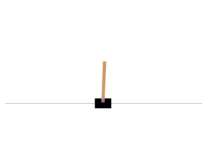
Let’s see how to interact with an environment. Your agent will need to select an action from an “action space” (the set of possible actions). Let’s see what this environment’s action space looks like:
env.action_spaceDiscrete(2)Yep, just two possible actions: accelerate towards the left or towards the right.
Since the pole is leaning toward the right (obs[2] > 0), let’s accelerate the cart toward the right:
action = 1 # accelerate right
obs, reward, done, info = env.step(action)
obsarray([-0.01261699, 0.19292789, 0.04204097, -0.28092127])Notice that the cart is now moving toward the right (obs[1] > 0). The pole is still tilted toward the right (obs[2] > 0), but its angular velocity is now negative (obs[3] < 0), so it will likely be tilted toward the left after the next step.
plot_environment(env)
save_fig("cart_pole_plot")Saving figure cart_pole_plot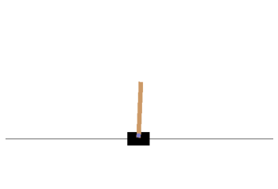
Looks like it’s doing what we’re telling it to do!
The environment also tells the agent how much reward it got during the last step:
reward1.0When the game is over, the environment returns done=True:
doneFalseFinally, info is an environment-specific dictionary that can provide some extra information that you may find useful for debugging or for training. For example, in some games it may indicate how many lives the agent has.
info{}The sequence of steps between the moment the environment is reset until it is done is called an “episode”. At the end of an episode (i.e., when step() returns done=True), you should reset the environment before you continue to use it.
if done:
obs = env.reset()Now how can we make the pole remain upright? We will need to define a policy for that. This is the strategy that the agent will use to select an action at each step. It can use all the past actions and observations to decide what to do.
A simple hard-coded policy
Let’s hard code a simple strategy: if the pole is tilting to the left, then push the cart to the left, and vice versa. Let’s see if that works:
env.seed(42)
def basic_policy(obs):
angle = obs[2]
return 0 if angle < 0 else 1
totals = []
for episode in range(500):
episode_rewards = 0
obs = env.reset()
for step in range(200):
action = basic_policy(obs)
obs, reward, done, info = env.step(action)
episode_rewards += reward
if done:
break
totals.append(episode_rewards)np.mean(totals), np.std(totals), np.min(totals), np.max(totals)(41.718, 8.858356280936096, 24.0, 68.0)Well, as expected, this strategy is a bit too basic: the best it did was to keep the pole up for only 68 steps. This environment is considered solved when the agent keeps the pole up for 200 steps.
Let’s visualize one episode:
env.seed(42)
frames = []
obs = env.reset()
for step in range(200):
img = env.render(mode="rgb_array")
frames.append(img)
action = basic_policy(obs)
obs, reward, done, info = env.step(action)
if done:
breakNow show the animation:
def update_scene(num, frames, patch):
patch.set_data(frames[num])
return patch,
def plot_animation(frames, repeat=False, interval=40):
fig = plt.figure()
patch = plt.imshow(frames[0])
plt.axis('off')
anim = animation.FuncAnimation(
fig, update_scene, fargs=(frames, patch),
frames=len(frames), repeat=repeat, interval=interval)
plt.close()
return animplot_animation(frames)Clearly the system is unstable and after just a few wobbles, the pole ends up too tilted: game over. We will need to be smarter than that!
Neural Network Policies
Let’s create a neural network that will take observations as inputs, and output the probabilities of actions to take for each observation. To choose an action, the network will estimate a probability for each action, then we will select an action randomly according to the estimated probabilities. In the case of the Cart-Pole environment, there are just two possible actions (left or right), so we only need one output neuron: it will output the probability p of the action 0 (left), and of course the probability of action 1 (right) will be 1 - p.
keras.backend.clear_session()
tf.random.set_seed(42)
np.random.seed(42)
n_inputs = 4 # == env.observation_space.shape[0]
model = keras.models.Sequential([
keras.layers.Dense(5, activation="elu", input_shape=[n_inputs]),
keras.layers.Dense(1, activation="sigmoid"),
])In this particular environment, the past actions and observations can safely be ignored, since each observation contains the environment’s full state. If there were some hidden state then you may need to consider past actions and observations in order to try to infer the hidden state of the environment. For example, if the environment only revealed the position of the cart but not its velocity, you would have to consider not only the current observation but also the previous observation in order to estimate the current velocity. Another example is if the observations are noisy: you may want to use the past few observations to estimate the most likely current state. Our problem is thus as simple as can be: the current observation is noise-free and contains the environment’s full state.
You may wonder why we plan to pick a random action based on the probability given by the policy network, rather than just picking the action with the highest probability. This approach lets the agent find the right balance between exploring new actions and exploiting the actions that are known to work well. Here’s an analogy: suppose you go to a restaurant for the first time, and all the dishes look equally appealing so you randomly pick one. If it turns out to be good, you can increase the probability to order it next time, but you shouldn’t increase that probability to 100%, or else you will never try out the other dishes, some of which may be even better than the one you tried.
Let’s write a small function that will run the model to play one episode, and return the frames so we can display an animation:
def render_policy_net(model, n_max_steps=200, seed=42):
frames = []
env = gym.make("CartPole-v1")
env.seed(seed)
np.random.seed(seed)
obs = env.reset()
for step in range(n_max_steps):
frames.append(env.render(mode="rgb_array"))
left_proba = model.predict(obs.reshape(1, -1))
action = int(np.random.rand() > left_proba)
obs, reward, done, info = env.step(action)
if done:
break
env.close()
return framesNow let’s look at how well this randomly initialized policy network performs:
frames = render_policy_net(model)
plot_animation(frames)Yeah… pretty bad. The neural network will have to learn to do better. First let’s see if it is capable of learning the basic policy we used earlier: go left if the pole is tilting left, and go right if it is tilting right.
We can make the same net play in 50 different environments in parallel (this will give us a diverse training batch at each step), and train for 5000 iterations. We also reset environments when they are done. We train the model using a custom training loop so we can easily use the predictions at each training step to advance the environments.
n_environments = 50
n_iterations = 5000
envs = [gym.make("CartPole-v1") for _ in range(n_environments)]
for index, env in enumerate(envs):
env.seed(index)
np.random.seed(42)
observations = [env.reset() for env in envs]
optimizer = keras.optimizers.RMSprop()
loss_fn = keras.losses.binary_crossentropy
for iteration in range(n_iterations):
# if angle < 0, we want proba(left) = 1., or else proba(left) = 0.
target_probas = np.array([([1.] if obs[2] < 0 else [0.])
for obs in observations])
with tf.GradientTape() as tape:
left_probas = model(np.array(observations))
loss = tf.reduce_mean(loss_fn(target_probas, left_probas))
print("\rIteration: {}, Loss: {:.3f}".format(iteration, loss.numpy()), end="")
grads = tape.gradient(loss, model.trainable_variables)
optimizer.apply_gradients(zip(grads, model.trainable_variables))
actions = (np.random.rand(n_environments, 1) > left_probas.numpy()).astype(np.int32)
for env_index, env in enumerate(envs):
obs, reward, done, info = env.step(actions[env_index][0])
observations[env_index] = obs if not done else env.reset()
for env in envs:
env.close()Iteration: 4999, Loss: 0.094frames = render_policy_net(model)
plot_animation(frames)Looks like it learned the policy correctly. Now let’s see if it can learn a better policy on its own. One that does not wobble as much.
Policy Gradients
To train this neural network we will need to define the target probabilities y. If an action is good we should increase its probability, and conversely if it is bad we should reduce it. But how do we know whether an action is good or bad? The problem is that most actions have delayed effects, so when you win or lose points in an episode, it is not clear which actions contributed to this result: was it just the last action? Or the last 10? Or just one action 50 steps earlier? This is called the credit assignment problem.
The Policy Gradients algorithm tackles this problem by first playing multiple episodes, then making the actions in good episodes slightly more likely, while actions in bad episodes are made slightly less likely. First we play, then we go back and think about what we did.
Let’s start by creating a function to play a single step using the model. We will also pretend for now that whatever action it takes is the right one, so we can compute the loss and its gradients (we will just save these gradients for now, and modify them later depending on how good or bad the action turned out to be):
def play_one_step(env, obs, model, loss_fn):
with tf.GradientTape() as tape:
left_proba = model(obs[np.newaxis])
action = (tf.random.uniform([1, 1]) > left_proba)
y_target = tf.constant([[1.]]) - tf.cast(action, tf.float32)
loss = tf.reduce_mean(loss_fn(y_target, left_proba))
grads = tape.gradient(loss, model.trainable_variables)
obs, reward, done, info = env.step(int(action[0, 0].numpy()))
return obs, reward, done, gradsIf left_proba is high, then action will most likely be False (since a random number uniformally sampled between 0 and 1 will probably not be greater than left_proba). And False means 0 when you cast it to a number, so y_target would be equal to 1 - 0 = 1. In other words, we set the target to 1, meaning we pretend that the probability of going left should have been 100% (so we took the right action).
Now let’s create another function that will rely on the play_one_step() function to play multiple episodes, returning all the rewards and gradients, for each episode and each step:
def play_multiple_episodes(env, n_episodes, n_max_steps, model, loss_fn):
all_rewards = []
all_grads = []
for episode in range(n_episodes):
current_rewards = []
current_grads = []
obs = env.reset()
for step in range(n_max_steps):
obs, reward, done, grads = play_one_step(env, obs, model, loss_fn)
current_rewards.append(reward)
current_grads.append(grads)
if done:
break
all_rewards.append(current_rewards)
all_grads.append(current_grads)
return all_rewards, all_gradsThe Policy Gradients algorithm uses the model to play the episode several times (e.g., 10 times), then it goes back and looks at all the rewards, discounts them and normalizes them. So let’s create couple functions for that: the first will compute discounted rewards; the second will normalize the discounted rewards across many episodes.
def discount_rewards(rewards, discount_rate):
discounted = np.array(rewards)
for step in range(len(rewards) - 2, -1, -1):
discounted[step] += discounted[step + 1] * discount_rate
return discounted
def discount_and_normalize_rewards(all_rewards, discount_rate):
all_discounted_rewards = [discount_rewards(rewards, discount_rate)
for rewards in all_rewards]
flat_rewards = np.concatenate(all_discounted_rewards)
reward_mean = flat_rewards.mean()
reward_std = flat_rewards.std()
return [(discounted_rewards - reward_mean) / reward_std
for discounted_rewards in all_discounted_rewards]Say there were 3 actions, and after each action there was a reward: first 10, then 0, then -50. If we use a discount factor of 80%, then the 3rd action will get -50 (full credit for the last reward), but the 2nd action will only get -40 (80% credit for the last reward), and the 1st action will get 80% of -40 (-32) plus full credit for the first reward (+10), which leads to a discounted reward of -22:
discount_rewards([10, 0, -50], discount_rate=0.8)array([-22, -40, -50])To normalize all discounted rewards across all episodes, we compute the mean and standard deviation of all the discounted rewards, and we subtract the mean from each discounted reward, and divide by the standard deviation:
discount_and_normalize_rewards([[10, 0, -50], [10, 20]], discount_rate=0.8)[array([-0.28435071, -0.86597718, -1.18910299]),
array([1.26665318, 1.0727777 ])]n_iterations = 150
n_episodes_per_update = 10
n_max_steps = 200
discount_rate = 0.95optimizer = keras.optimizers.Adam(learning_rate=0.01)
loss_fn = keras.losses.binary_crossentropykeras.backend.clear_session()
np.random.seed(42)
tf.random.set_seed(42)
model = keras.models.Sequential([
keras.layers.Dense(5, activation="elu", input_shape=[4]),
keras.layers.Dense(1, activation="sigmoid"),
])env = gym.make("CartPole-v1")
env.seed(42);
for iteration in range(n_iterations):
all_rewards, all_grads = play_multiple_episodes(
env, n_episodes_per_update, n_max_steps, model, loss_fn)
total_rewards = sum(map(sum, all_rewards)) # Not shown in the book
print("\rIteration: {}, mean rewards: {:.1f}".format( # Not shown
iteration, total_rewards / n_episodes_per_update), end="") # Not shown
all_final_rewards = discount_and_normalize_rewards(all_rewards,
discount_rate)
all_mean_grads = []
for var_index in range(len(model.trainable_variables)):
mean_grads = tf.reduce_mean(
[final_reward * all_grads[episode_index][step][var_index]
for episode_index, final_rewards in enumerate(all_final_rewards)
for step, final_reward in enumerate(final_rewards)], axis=0)
all_mean_grads.append(mean_grads)
optimizer.apply_gradients(zip(all_mean_grads, model.trainable_variables))
env.close()Iteration: 149, mean rewards: 199.6frames = render_policy_net(model)
plot_animation(frames)Markov Chains
np.random.seed(42)
transition_probabilities = [ # shape=[s, s']
[0.7, 0.2, 0.0, 0.1], # from s0 to s0, s1, s2, s3
[0.0, 0.0, 0.9, 0.1], # from s1 to ...
[0.0, 1.0, 0.0, 0.0], # from s2 to ...
[0.0, 0.0, 0.0, 1.0]] # from s3 to ...
n_max_steps = 50
def print_sequence():
current_state = 0
print("States:", end=" ")
for step in range(n_max_steps):
print(current_state, end=" ")
if current_state == 3:
break
current_state = np.random.choice(range(4), p=transition_probabilities[current_state])
else:
print("...", end="")
print()
for _ in range(10):
print_sequence()States: 0 0 3
States: 0 1 2 1 2 1 2 1 2 1 3
States: 0 1 2 1 2 1 2 1 2 1 2 1 2 1 2 1 2 1 2 1 2 1 3
States: 0 3
States: 0 1 2 1 2 1 2 1 2 1 2 1 2 1 2 1 3
States: 0 1 3
States: 0 1 2 1 2 1 2 1 2 1 2 1 2 1 2 1 2 1 2 1 2 1 2 1 2 1 2 1 2 1 2 1 2 1 2 1 2 1 2 1 2 1 2 1 2 1 2 1 2 1 ...
States: 0 0 3
States: 0 0 0 1 2 1 2 1 3
States: 0 1 2 1 2 1 2 1 2 1 2 1 2 1 2 1 2 1 2 1 2 1 3 Markov Decision Process
Let’s define some transition probabilities, rewards and possible actions. For example, in state s0, if action a0 is chosen then with proba 0.7 we will go to state s0 with reward +10, with probability 0.3 we will go to state s1 with no reward, and with never go to state s2 (so the transition probabilities are [0.7, 0.3, 0.0], and the rewards are [+10, 0, 0]):
transition_probabilities = [ # shape=[s, a, s']
[[0.7, 0.3, 0.0], [1.0, 0.0, 0.0], [0.8, 0.2, 0.0]],
[[0.0, 1.0, 0.0], None, [0.0, 0.0, 1.0]],
[None, [0.8, 0.1, 0.1], None]]
rewards = [ # shape=[s, a, s']
[[+10, 0, 0], [0, 0, 0], [0, 0, 0]],
[[0, 0, 0], [0, 0, 0], [0, 0, -50]],
[[0, 0, 0], [+40, 0, 0], [0, 0, 0]]]
possible_actions = [[0, 1, 2], [0, 2], [1]]Q-Value Iteration
Q_values = np.full((3, 3), -np.inf) # -np.inf for impossible actions
for state, actions in enumerate(possible_actions):
Q_values[state, actions] = 0.0 # for all possible actionsgamma = 0.90 # the discount factor
history1 = [] # Not shown in the book (for the figure below)
for iteration in range(50):
Q_prev = Q_values.copy()
history1.append(Q_prev) # Not shown
for s in range(3):
for a in possible_actions[s]:
Q_values[s, a] = np.sum([
transition_probabilities[s][a][sp]
* (rewards[s][a][sp] + gamma * np.max(Q_prev[sp]))
for sp in range(3)])
history1 = np.array(history1) # Not shownQ_valuesarray([[18.91891892, 17.02702702, 13.62162162],
[ 0. , -inf, -4.87971488],
[ -inf, 50.13365013, -inf]])np.argmax(Q_values, axis=1)array([0, 0, 1])The optimal policy for this MDP, when using a discount factor of 0.90, is to choose action a0 when in state s0, and choose action a0 when in state s1, and finally choose action a1 (the only possible action) when in state s2.
Let’s try again with a discount factor of 0.95:
Q_values = np.full((3, 3), -np.inf) # -np.inf for impossible actions
for state, actions in enumerate(possible_actions):
Q_values[state, actions] = 0.0 # for all possible actionsgamma = 0.95 # the discount factor
for iteration in range(50):
Q_prev = Q_values.copy()
for s in range(3):
for a in possible_actions[s]:
Q_values[s, a] = np.sum([
transition_probabilities[s][a][sp]
* (rewards[s][a][sp] + gamma * np.max(Q_prev[sp]))
for sp in range(3)])Q_valuesarray([[21.73304188, 20.63807938, 16.70138772],
[ 0.95462106, -inf, 1.01361207],
[ -inf, 53.70728682, -inf]])np.argmax(Q_values, axis=1)array([0, 2, 1])Now the policy has changed! In state s1, we now prefer to go through the fire (choose action a2). This is because the discount factor is larger so the agent values the future more, and it is therefore ready to pay an immediate penalty in order to get more future rewards.
Q-Learning
Q-Learning works by watching an agent play (e.g., randomly) and gradually improving its estimates of the Q-Values. Once it has accurate Q-Value estimates (or close enough), then the optimal policy consists in choosing the action that has the highest Q-Value (i.e., the greedy policy).
We will need to simulate an agent moving around in the environment, so let’s define a function to perform some action and get the new state and a reward:
def step(state, action):
probas = transition_probabilities[state][action]
next_state = np.random.choice([0, 1, 2], p=probas)
reward = rewards[state][action][next_state]
return next_state, rewardWe also need an exploration policy, which can be any policy, as long as it visits every possible state many times. We will just use a random policy, since the state space is very small:
def exploration_policy(state):
return np.random.choice(possible_actions[state])Now let’s initialize the Q-Values like earlier, and run the Q-Learning algorithm:
np.random.seed(42)
Q_values = np.full((3, 3), -np.inf)
for state, actions in enumerate(possible_actions):
Q_values[state][actions] = 0
alpha0 = 0.05 # initial learning rate
decay = 0.005 # learning rate decay
gamma = 0.90 # discount factor
state = 0 # initial state
history2 = [] # Not shown in the book
for iteration in range(10000):
history2.append(Q_values.copy()) # Not shown
action = exploration_policy(state)
next_state, reward = step(state, action)
next_value = np.max(Q_values[next_state]) # greedy policy at the next step
alpha = alpha0 / (1 + iteration * decay)
Q_values[state, action] *= 1 - alpha
Q_values[state, action] += alpha * (reward + gamma * next_value)
state = next_state
history2 = np.array(history2) # Not shownQ_valuesarray([[18.77621289, 17.2238872 , 13.74543343],
[ 0. , -inf, -8.00485647],
[ -inf, 49.40208921, -inf]])np.argmax(Q_values, axis=1) # optimal action for each statearray([0, 0, 1])true_Q_value = history1[-1, 0, 0]
fig, axes = plt.subplots(1, 2, figsize=(10, 4), sharey=True)
axes[0].set_ylabel("Q-Value$(s_0, a_0)$", fontsize=14)
axes[0].set_title("Q-Value Iteration", fontsize=14)
axes[1].set_title("Q-Learning", fontsize=14)
for ax, width, history in zip(axes, (50, 10000), (history1, history2)):
ax.plot([0, width], [true_Q_value, true_Q_value], "k--")
ax.plot(np.arange(width), history[:, 0, 0], "b-", linewidth=2)
ax.set_xlabel("Iterations", fontsize=14)
ax.axis([0, width, 0, 24])
save_fig("q_value_plot")Saving figure q_value_plot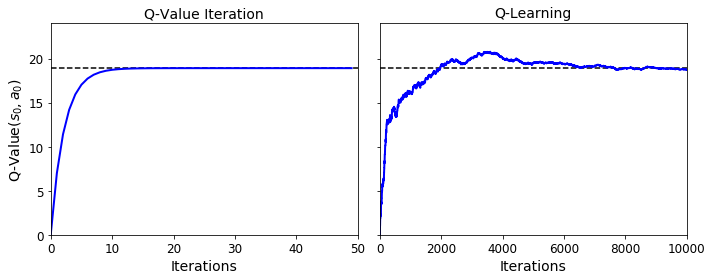
Deep Q-Network
Let’s build the DQN. Given a state, it will estimate, for each possible action, the sum of discounted future rewards it can expect after it plays that action (but before it sees its outcome):
keras.backend.clear_session()
tf.random.set_seed(42)
np.random.seed(42)
env = gym.make("CartPole-v1")
input_shape = [4] # == env.observation_space.shape
n_outputs = 2 # == env.action_space.n
model = keras.models.Sequential([
keras.layers.Dense(32, activation="elu", input_shape=input_shape),
keras.layers.Dense(32, activation="elu"),
keras.layers.Dense(n_outputs)
])To select an action using this DQN, we just pick the action with the largest predicted Q-value. However, to ensure that the agent explores the environment, we choose a random action with probability epsilon.
def epsilon_greedy_policy(state, epsilon=0):
if np.random.rand() < epsilon:
return np.random.randint(n_outputs)
else:
Q_values = model.predict(state[np.newaxis])
return np.argmax(Q_values[0])We will also need a replay memory. It will contain the agent’s experiences, in the form of tuples: (obs, action, reward, next_obs, done). We can use the deque class for that (but make sure to check out DeepMind’s excellent Reverb library for a much more robust implementation of experience replay):
from collections import deque
replay_memory = deque(maxlen=2000)And let’s create a function to sample experiences from the replay memory. It will return 5 NumPy arrays: [obs, actions, rewards, next_obs, dones].
def sample_experiences(batch_size):
indices = np.random.randint(len(replay_memory), size=batch_size)
batch = [replay_memory[index] for index in indices]
states, actions, rewards, next_states, dones = [
np.array([experience[field_index] for experience in batch])
for field_index in range(5)]
return states, actions, rewards, next_states, donesNow we can create a function that will use the DQN to play one step, and record its experience in the replay memory:
def play_one_step(env, state, epsilon):
action = epsilon_greedy_policy(state, epsilon)
next_state, reward, done, info = env.step(action)
replay_memory.append((state, action, reward, next_state, done))
return next_state, reward, done, infoLastly, let’s create a function that will sample some experiences from the replay memory and perform a training step:
Notes: * The first 3 releases of the 2nd edition were missing the reshape() operation which converts target_Q_values to a column vector (this is required by the loss_fn()). * The book uses a learning rate of 1e-3, but in the code below I use 1e-2, as it significantly improves training. I also tuned the learning rates of the DQN variants below.
batch_size = 32
discount_rate = 0.95
optimizer = keras.optimizers.Adam(learning_rate=1e-2)
loss_fn = keras.losses.mean_squared_error
def training_step(batch_size):
experiences = sample_experiences(batch_size)
states, actions, rewards, next_states, dones = experiences
next_Q_values = model.predict(next_states)
max_next_Q_values = np.max(next_Q_values, axis=1)
target_Q_values = (rewards +
(1 - dones) * discount_rate * max_next_Q_values)
target_Q_values = target_Q_values.reshape(-1, 1)
mask = tf.one_hot(actions, n_outputs)
with tf.GradientTape() as tape:
all_Q_values = model(states)
Q_values = tf.reduce_sum(all_Q_values * mask, axis=1, keepdims=True)
loss = tf.reduce_mean(loss_fn(target_Q_values, Q_values))
grads = tape.gradient(loss, model.trainable_variables)
optimizer.apply_gradients(zip(grads, model.trainable_variables))And now, let’s train the model!
env.seed(42)
np.random.seed(42)
tf.random.set_seed(42)
rewards = []
best_score = 0for episode in range(600):
obs = env.reset()
for step in range(200):
epsilon = max(1 - episode / 500, 0.01)
obs, reward, done, info = play_one_step(env, obs, epsilon)
if done:
break
rewards.append(step) # Not shown in the book
if step >= best_score: # Not shown
best_weights = model.get_weights() # Not shown
best_score = step # Not shown
print("\rEpisode: {}, Steps: {}, eps: {:.3f}".format(episode, step + 1, epsilon), end="") # Not shown
if episode > 50:
training_step(batch_size)
model.set_weights(best_weights)Episode: 599, Steps: 200, eps: 0.010plt.figure(figsize=(8, 4))
plt.plot(rewards)
plt.xlabel("Episode", fontsize=14)
plt.ylabel("Sum of rewards", fontsize=14)
save_fig("dqn_rewards_plot")
plt.show()Saving figure dqn_rewards_plot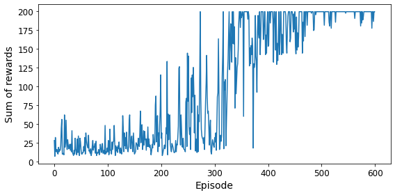
env.seed(42)
state = env.reset()
frames = []
for step in range(200):
action = epsilon_greedy_policy(state)
state, reward, done, info = env.step(action)
if done:
break
img = env.render(mode="rgb_array")
frames.append(img)
plot_animation(frames)Not bad at all! 😀
Double DQN
keras.backend.clear_session()
tf.random.set_seed(42)
np.random.seed(42)
model = keras.models.Sequential([
keras.layers.Dense(32, activation="elu", input_shape=[4]),
keras.layers.Dense(32, activation="elu"),
keras.layers.Dense(n_outputs)
])
target = keras.models.clone_model(model)
target.set_weights(model.get_weights())batch_size = 32
discount_rate = 0.95
optimizer = keras.optimizers.Adam(learning_rate=6e-3)
loss_fn = keras.losses.Huber()
def training_step(batch_size):
experiences = sample_experiences(batch_size)
states, actions, rewards, next_states, dones = experiences
next_Q_values = model.predict(next_states)
best_next_actions = np.argmax(next_Q_values, axis=1)
next_mask = tf.one_hot(best_next_actions, n_outputs).numpy()
next_best_Q_values = (target.predict(next_states) * next_mask).sum(axis=1)
target_Q_values = (rewards +
(1 - dones) * discount_rate * next_best_Q_values)
target_Q_values = target_Q_values.reshape(-1, 1)
mask = tf.one_hot(actions, n_outputs)
with tf.GradientTape() as tape:
all_Q_values = model(states)
Q_values = tf.reduce_sum(all_Q_values * mask, axis=1, keepdims=True)
loss = tf.reduce_mean(loss_fn(target_Q_values, Q_values))
grads = tape.gradient(loss, model.trainable_variables)
optimizer.apply_gradients(zip(grads, model.trainable_variables))replay_memory = deque(maxlen=2000)env.seed(42)
np.random.seed(42)
tf.random.set_seed(42)
rewards = []
best_score = 0
for episode in range(600):
obs = env.reset()
for step in range(200):
epsilon = max(1 - episode / 500, 0.01)
obs, reward, done, info = play_one_step(env, obs, epsilon)
if done:
break
rewards.append(step)
if step >= best_score:
best_weights = model.get_weights()
best_score = step
print("\rEpisode: {}, Steps: {}, eps: {:.3f}".format(episode, step + 1, epsilon), end="")
if episode >= 50:
training_step(batch_size)
if episode % 50 == 0:
target.set_weights(model.get_weights())
# Alternatively, you can do soft updates at each step:
#if episode >= 50:
#target_weights = target.get_weights()
#online_weights = model.get_weights()
#for index in range(len(target_weights)):
# target_weights[index] = 0.99 * target_weights[index] + 0.01 * online_weights[index]
#target.set_weights(target_weights)
model.set_weights(best_weights)Episode: 599, Steps: 55, eps: 0.0100plt.figure(figsize=(8, 4))
plt.plot(rewards)
plt.xlabel("Episode", fontsize=14)
plt.ylabel("Sum of rewards", fontsize=14)
save_fig("double_dqn_rewards_plot")
plt.show()Saving figure double_dqn_rewards_plot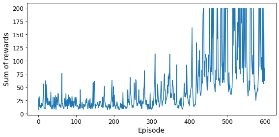
env.seed(43)
state = env.reset()
frames = []
for step in range(200):
action = epsilon_greedy_policy(state)
state, reward, done, info = env.step(action)
if done:
break
img = env.render(mode="rgb_array")
frames.append(img)
plot_animation(frames)Dueling Double DQN
keras.backend.clear_session()
tf.random.set_seed(42)
np.random.seed(42)
K = keras.backend
input_states = keras.layers.Input(shape=[4])
hidden1 = keras.layers.Dense(32, activation="elu")(input_states)
hidden2 = keras.layers.Dense(32, activation="elu")(hidden1)
state_values = keras.layers.Dense(1)(hidden2)
raw_advantages = keras.layers.Dense(n_outputs)(hidden2)
advantages = raw_advantages - K.max(raw_advantages, axis=1, keepdims=True)
Q_values = state_values + advantages
model = keras.models.Model(inputs=[input_states], outputs=[Q_values])
target = keras.models.clone_model(model)
target.set_weights(model.get_weights())batch_size = 32
discount_rate = 0.95
optimizer = keras.optimizers.Adam(learning_rate=7.5e-3)
loss_fn = keras.losses.Huber()
def training_step(batch_size):
experiences = sample_experiences(batch_size)
states, actions, rewards, next_states, dones = experiences
next_Q_values = model.predict(next_states)
best_next_actions = np.argmax(next_Q_values, axis=1)
next_mask = tf.one_hot(best_next_actions, n_outputs).numpy()
next_best_Q_values = (target.predict(next_states) * next_mask).sum(axis=1)
target_Q_values = (rewards +
(1 - dones) * discount_rate * next_best_Q_values)
target_Q_values = target_Q_values.reshape(-1, 1)
mask = tf.one_hot(actions, n_outputs)
with tf.GradientTape() as tape:
all_Q_values = model(states)
Q_values = tf.reduce_sum(all_Q_values * mask, axis=1, keepdims=True)
loss = tf.reduce_mean(loss_fn(target_Q_values, Q_values))
grads = tape.gradient(loss, model.trainable_variables)
optimizer.apply_gradients(zip(grads, model.trainable_variables))replay_memory = deque(maxlen=2000)env.seed(42)
np.random.seed(42)
tf.random.set_seed(42)
rewards = []
best_score = 0
for episode in range(600):
obs = env.reset()
for step in range(200):
epsilon = max(1 - episode / 500, 0.01)
obs, reward, done, info = play_one_step(env, obs, epsilon)
if done:
break
rewards.append(step)
if step >= best_score:
best_weights = model.get_weights()
best_score = step
print("\rEpisode: {}, Steps: {}, eps: {:.3f}".format(episode, step + 1, epsilon), end="")
if episode >= 50:
training_step(batch_size)
if episode % 50 == 0:
target.set_weights(model.get_weights())
model.set_weights(best_weights)Episode: 599, Steps: 200, eps: 0.010plt.plot(rewards)
plt.xlabel("Episode")
plt.ylabel("Sum of rewards")
plt.show()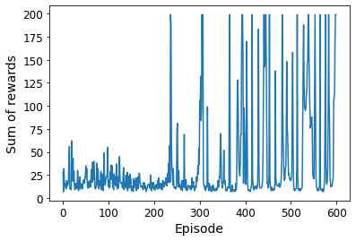
env.seed(42)
state = env.reset()
frames = []
for step in range(200):
action = epsilon_greedy_policy(state)
state, reward, done, info = env.step(action)
if done:
break
img = env.render(mode="rgb_array")
frames.append(img)
plot_animation(frames)This looks like a pretty robust agent!
env.close()Using TF-Agents to Beat Breakout
Let’s use TF-Agents to create an agent that will learn to play Breakout. We will use the Deep Q-Learning algorithm, so you can easily compare the components with the previous implementation, but TF-Agents implements many other (and more sophisticated) algorithms!
TF-Agents Environments
tf.random.set_seed(42)
np.random.seed(42)from tf_agents.environments import suite_gym
env = suite_gym.load("Breakout-v4")
env<tf_agents.environments.wrappers.TimeLimit at 0x7fe46bf261d0>env.gym<gym.envs.atari.atari_env.AtariEnv at 0x7fe46bdbba50>env.seed(42)
env.reset()TimeStep(step_type=array(0, dtype=int32), reward=array(0., dtype=float32), discount=array(1., dtype=float32), observation=array([[[0, 0, 0],
[0, 0, 0],
[0, 0, 0],
...,
[0, 0, 0],
[0, 0, 0],
[0, 0, 0]],
[[0, 0, 0],
[0, 0, 0],
[0, 0, 0],
...,
[0, 0, 0],
[0, 0, 0],
[0, 0, 0]],
[[0, 0, 0],
[0, 0, 0],
[0, 0, 0],
...,
[0, 0, 0],
[0, 0, 0],
[0, 0, 0]],
...,
[[0, 0, 0],
[0, 0, 0],
[0, 0, 0],
...,
[0, 0, 0],
[0, 0, 0],
[0, 0, 0]],
[[0, 0, 0],
[0, 0, 0],
[0, 0, 0],
...,
[0, 0, 0],
[0, 0, 0],
[0, 0, 0]],
[[0, 0, 0],
[0, 0, 0],
[0, 0, 0],
...,
[0, 0, 0],
[0, 0, 0],
[0, 0, 0]]], dtype=uint8))env.step(1) # FireTimeStep(step_type=array(1, dtype=int32), reward=array(0., dtype=float32), discount=array(1., dtype=float32), observation=array([[[0, 0, 0],
[0, 0, 0],
[0, 0, 0],
...,
[0, 0, 0],
[0, 0, 0],
[0, 0, 0]],
[[0, 0, 0],
[0, 0, 0],
[0, 0, 0],
...,
[0, 0, 0],
[0, 0, 0],
[0, 0, 0]],
[[0, 0, 0],
[0, 0, 0],
[0, 0, 0],
...,
[0, 0, 0],
[0, 0, 0],
[0, 0, 0]],
...,
[[0, 0, 0],
[0, 0, 0],
[0, 0, 0],
...,
[0, 0, 0],
[0, 0, 0],
[0, 0, 0]],
[[0, 0, 0],
[0, 0, 0],
[0, 0, 0],
...,
[0, 0, 0],
[0, 0, 0],
[0, 0, 0]],
[[0, 0, 0],
[0, 0, 0],
[0, 0, 0],
...,
[0, 0, 0],
[0, 0, 0],
[0, 0, 0]]], dtype=uint8))img = env.render(mode="rgb_array")
plt.figure(figsize=(6, 8))
plt.imshow(img)
plt.axis("off")
save_fig("breakout_plot")
plt.show()Saving figure breakout_plot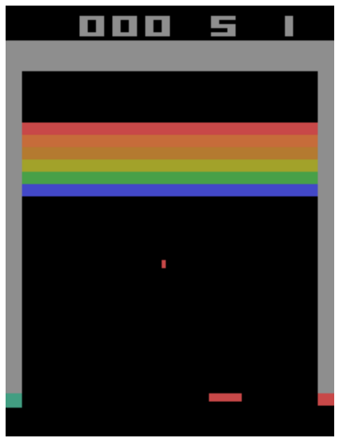
env.current_time_step()TimeStep(step_type=array(1, dtype=int32), reward=array(0., dtype=float32), discount=array(1., dtype=float32), observation=array([[[0, 0, 0],
[0, 0, 0],
[0, 0, 0],
...,
[0, 0, 0],
[0, 0, 0],
[0, 0, 0]],
[[0, 0, 0],
[0, 0, 0],
[0, 0, 0],
...,
[0, 0, 0],
[0, 0, 0],
[0, 0, 0]],
[[0, 0, 0],
[0, 0, 0],
[0, 0, 0],
...,
[0, 0, 0],
[0, 0, 0],
[0, 0, 0]],
...,
[[0, 0, 0],
[0, 0, 0],
[0, 0, 0],
...,
[0, 0, 0],
[0, 0, 0],
[0, 0, 0]],
[[0, 0, 0],
[0, 0, 0],
[0, 0, 0],
...,
[0, 0, 0],
[0, 0, 0],
[0, 0, 0]],
[[0, 0, 0],
[0, 0, 0],
[0, 0, 0],
...,
[0, 0, 0],
[0, 0, 0],
[0, 0, 0]]], dtype=uint8))Environment Specifications
env.observation_spec()BoundedArraySpec(shape=(210, 160, 3), dtype=dtype('uint8'), name='observation', minimum=0, maximum=255)env.action_spec()BoundedArraySpec(shape=(), dtype=dtype('int64'), name='action', minimum=0, maximum=3)env.time_step_spec()TimeStep(step_type=ArraySpec(shape=(), dtype=dtype('int32'), name='step_type'), reward=ArraySpec(shape=(), dtype=dtype('float32'), name='reward'), discount=BoundedArraySpec(shape=(), dtype=dtype('float32'), name='discount', minimum=0.0, maximum=1.0), observation=BoundedArraySpec(shape=(210, 160, 3), dtype=dtype('uint8'), name='observation', minimum=0, maximum=255))Environment Wrappers
You can wrap a TF-Agents environments in a TF-Agents wrapper:
from tf_agents.environments.wrappers import ActionRepeat
repeating_env = ActionRepeat(env, times=4)
repeating_env<tf_agents.environments.wrappers.ActionRepeat at 0x7fe46872cad0>repeating_env.unwrapped<gym.envs.atari.atari_env.AtariEnv at 0x7fe46bdbba50>Here is the list of available wrappers:
import tf_agents.environments.wrappers
for name in dir(tf_agents.environments.wrappers):
obj = getattr(tf_agents.environments.wrappers, name)
if hasattr(obj, "__base__") and issubclass(obj, tf_agents.environments.wrappers.PyEnvironmentBaseWrapper):
print("{:27s} {}".format(name, obj.__doc__.split("\n")[0]))ActionClipWrapper Wraps an environment and clips actions to spec before applying.
ActionDiscretizeWrapper Wraps an environment with continuous actions and discretizes them.
ActionOffsetWrapper Offsets actions to be zero-based.
ActionRepeat Repeates actions over n-steps while acummulating the received reward.
FlattenObservationsWrapper Wraps an environment and flattens nested multi-dimensional observations.
GoalReplayEnvWrapper Adds a goal to the observation, used for HER (Hindsight Experience Replay).
HistoryWrapper Adds observation and action history to the environment's observations.
ObservationFilterWrapper Filters observations based on an array of indexes.
OneHotActionWrapper Converts discrete action to one_hot format.
PerformanceProfiler End episodes after specified number of steps.
PyEnvironmentBaseWrapper PyEnvironment wrapper forwards calls to the given environment.
RunStats Wrapper that accumulates run statistics as the environment iterates.
TimeLimit End episodes after specified number of steps.The suite_gym.load() function can create an env and wrap it for you, both with TF-Agents environment wrappers and Gym environment wrappers (the latter are applied first).
from functools import partial
from gym.wrappers import TimeLimit
limited_repeating_env = suite_gym.load(
"Breakout-v4",
gym_env_wrappers=[partial(TimeLimit, max_episode_steps=10000)],
env_wrappers=[partial(ActionRepeat, times=4)],
)limited_repeating_env<tf_agents.environments.wrappers.ActionRepeat at 0x7fe4686ff550>limited_repeating_env.unwrapped<gym.envs.atari.atari_env.AtariEnv at 0x7fe3de8b6c90>Create an Atari Breakout environment, and wrap it to apply the default Atari preprocessing steps:
Warning: Breakout requires the player to press the FIRE button at the start of the game and after each life lost. The agent may take a very long time learning this because at first it seems that pressing FIRE just means losing faster. To speed up training considerably, we create and use a subclass of the AtariPreprocessing wrapper class called AtariPreprocessingWithAutoFire which presses FIRE (i.e., plays action 1) automatically at the start of the game and after each life lost. This is different from the book which uses the regular AtariPreprocessing wrapper.
from tf_agents.environments import suite_atari
from tf_agents.environments.atari_preprocessing import AtariPreprocessing
from tf_agents.environments.atari_wrappers import FrameStack4
max_episode_steps = 27000 # <=> 108k ALE frames since 1 step = 4 frames
environment_name = "BreakoutNoFrameskip-v4"
class AtariPreprocessingWithAutoFire(AtariPreprocessing):
def reset(self, **kwargs):
obs = super().reset(**kwargs)
super().step(1) # FIRE to start
return obs
def step(self, action):
lives_before_action = self.ale.lives()
obs, rewards, done, info = super().step(action)
if self.ale.lives() < lives_before_action and not done:
super().step(1) # FIRE to start after life lost
return obs, rewards, done, info
env = suite_atari.load(
environment_name,
max_episode_steps=max_episode_steps,
gym_env_wrappers=[AtariPreprocessingWithAutoFire, FrameStack4])env<tf_agents.environments.atari_wrappers.AtariTimeLimit at 0x7fe46bf46510>Play a few steps just to see what happens:
env.seed(42)
env.reset()
for _ in range(4):
time_step = env.step(3) # LEFTdef plot_observation(obs):
# Since there are only 3 color channels, you cannot display 4 frames
# with one primary color per frame. So this code computes the delta between
# the current frame and the mean of the other frames, and it adds this delta
# to the red and blue channels to get a pink color for the current frame.
obs = obs.astype(np.float32)
img = obs[..., :3]
current_frame_delta = np.maximum(obs[..., 3] - obs[..., :3].mean(axis=-1), 0.)
img[..., 0] += current_frame_delta
img[..., 2] += current_frame_delta
img = np.clip(img / 150, 0, 1)
plt.imshow(img)
plt.axis("off")plt.figure(figsize=(6, 6))
plot_observation(time_step.observation)
save_fig("preprocessed_breakout_plot")
plt.show()Saving figure preprocessed_breakout_plot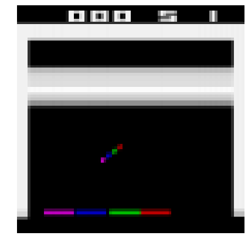
Convert the Python environment to a TF environment:
from tf_agents.environments.tf_py_environment import TFPyEnvironment
tf_env = TFPyEnvironment(env)Creating the DQN
Create a small class to normalize the observations. Images are stored using bytes from 0 to 255 to use less RAM, but we want to pass floats from 0.0 to 1.0 to the neural network:
Create the Q-Network:
from tf_agents.networks.q_network import QNetwork
preprocessing_layer = keras.layers.Lambda(
lambda obs: tf.cast(obs, np.float32) / 255.)
conv_layer_params=[(32, (8, 8), 4), (64, (4, 4), 2), (64, (3, 3), 1)]
fc_layer_params=[512]
q_net = QNetwork(
tf_env.observation_spec(),
tf_env.action_spec(),
preprocessing_layers=preprocessing_layer,
conv_layer_params=conv_layer_params,
fc_layer_params=fc_layer_params)Create the DQN Agent:
from tf_agents.agents.dqn.dqn_agent import DqnAgent
train_step = tf.Variable(0)
update_period = 4 # run a training step every 4 collect steps
optimizer = keras.optimizers.RMSprop(learning_rate=2.5e-4, rho=0.95, momentum=0.0,
epsilon=0.00001, centered=True)
epsilon_fn = keras.optimizers.schedules.PolynomialDecay(
initial_learning_rate=1.0, # initial ε
decay_steps=250000 // update_period, # <=> 1,000,000 ALE frames
end_learning_rate=0.01) # final ε
agent = DqnAgent(tf_env.time_step_spec(),
tf_env.action_spec(),
q_network=q_net,
optimizer=optimizer,
target_update_period=2000, # <=> 32,000 ALE frames
td_errors_loss_fn=keras.losses.Huber(reduction="none"),
gamma=0.99, # discount factor
train_step_counter=train_step,
epsilon_greedy=lambda: epsilon_fn(train_step))
agent.initialize()Create the replay buffer (this will use a lot of RAM, so please reduce the buffer size if you get an out-of-memory error):
Warning: we use a replay buffer of size 100,000 instead of 1,000,000 (as used in the book) since many people were getting OOM (Out-Of-Memory) errors.
from tf_agents.replay_buffers import tf_uniform_replay_buffer
replay_buffer = tf_uniform_replay_buffer.TFUniformReplayBuffer(
data_spec=agent.collect_data_spec,
batch_size=tf_env.batch_size,
max_length=100000) # reduce if OOM error
replay_buffer_observer = replay_buffer.add_batchCreate a simple custom observer that counts and displays the number of times it is called (except when it is passed a trajectory that represents the boundary between two episodes, as this does not count as a step):
class ShowProgress:
def __init__(self, total):
self.counter = 0
self.total = total
def __call__(self, trajectory):
if not trajectory.is_boundary():
self.counter += 1
if self.counter % 100 == 0:
print("\r{}/{}".format(self.counter, self.total), end="")Let’s add some training metrics:
from tf_agents.metrics import tf_metrics
train_metrics = [
tf_metrics.NumberOfEpisodes(),
tf_metrics.EnvironmentSteps(),
tf_metrics.AverageReturnMetric(),
tf_metrics.AverageEpisodeLengthMetric(),
]train_metrics[0].result()<tf.Tensor: shape=(), dtype=int64, numpy=0>from tf_agents.eval.metric_utils import log_metrics
import logging
logging.getLogger().setLevel(logging.INFO)
log_metrics(train_metrics)Create the collect driver:
from tf_agents.drivers.dynamic_step_driver import DynamicStepDriver
collect_driver = DynamicStepDriver(
tf_env,
agent.collect_policy,
observers=[replay_buffer_observer] + train_metrics,
num_steps=update_period) # collect 4 steps for each training iterationCollect the initial experiences, before training:
from tf_agents.policies.random_tf_policy import RandomTFPolicy
initial_collect_policy = RandomTFPolicy(tf_env.time_step_spec(),
tf_env.action_spec())
init_driver = DynamicStepDriver(
tf_env,
initial_collect_policy,
observers=[replay_buffer.add_batch, ShowProgress(20000)],
num_steps=20000) # <=> 80,000 ALE frames
final_time_step, final_policy_state = init_driver.run()20000/20000Let’s sample 2 sub-episodes, with 3 time steps each and display them:
Note: replay_buffer.get_next() is deprecated. We must use replay_buffer.as_dataset(..., single_deterministic_pass=False) instead.
tf.random.set_seed(9) # chosen to show an example of trajectory at the end of an episode
#trajectories, buffer_info = replay_buffer.get_next( # get_next() is deprecated
# sample_batch_size=2, num_steps=3)
trajectories, buffer_info = next(iter(replay_buffer.as_dataset(
sample_batch_size=2,
num_steps=3,
single_deterministic_pass=False)))trajectories._fields('step_type',
'observation',
'action',
'policy_info',
'next_step_type',
'reward',
'discount')trajectories.observation.shapeTensorShape([2, 3, 84, 84, 4])from tf_agents.trajectories.trajectory import to_transition
time_steps, action_steps, next_time_steps = to_transition(trajectories)
time_steps.observation.shapeTensorShape([2, 2, 84, 84, 4])trajectories.step_type.numpy()array([[1, 1, 1],
[1, 1, 1]], dtype=int32)plt.figure(figsize=(10, 6.8))
for row in range(2):
for col in range(3):
plt.subplot(2, 3, row * 3 + col + 1)
plot_observation(trajectories.observation[row, col].numpy())
plt.subplots_adjust(left=0, right=1, bottom=0, top=1, hspace=0, wspace=0.02)
save_fig("sub_episodes_plot")
plt.show()Saving figure sub_episodes_plot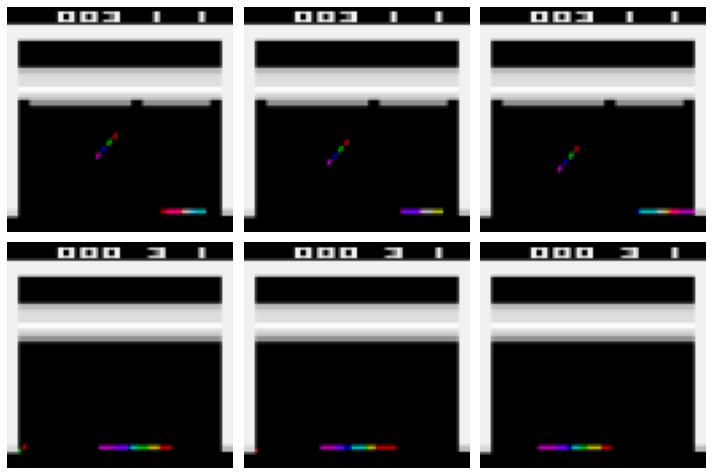
Now let’s create the dataset:
dataset = replay_buffer.as_dataset(
sample_batch_size=64,
num_steps=2,
num_parallel_calls=3).prefetch(3)Convert the main functions to TF Functions for better performance:
from tf_agents.utils.common import function
collect_driver.run = function(collect_driver.run)
agent.train = function(agent.train)And now we are ready to run the main loop!
def train_agent(n_iterations):
time_step = None
policy_state = agent.collect_policy.get_initial_state(tf_env.batch_size)
iterator = iter(dataset)
for iteration in range(n_iterations):
time_step, policy_state = collect_driver.run(time_step, policy_state)
trajectories, buffer_info = next(iterator)
train_loss = agent.train(trajectories)
print("\r{} loss:{:.5f}".format(
iteration, train_loss.loss.numpy()), end="")
if iteration % 1000 == 0:
log_metrics(train_metrics)Run the next cell to train the agent for 50,000 steps. Then look at its behavior by running the following cell. You can run these two cells as many times as you wish. The agent will keep improving! It will likely take over 200,000 iterations for the agent to become reasonably good.
train_agent(n_iterations=50000)WARNING:tensorflow:From /opt/conda/envs/tf2/lib/python3.7/site-packages/tensorflow/python/util/dispatch.py:201: calling foldr_v2 (from tensorflow.python.ops.functional_ops) with back_prop=False is deprecated and will be removed in a future version.
Instructions for updating:
back_prop=False is deprecated. Consider using tf.stop_gradient instead.
Instead of:
results = tf.foldr(fn, elems, back_prop=False)
Use:
results = tf.nest.map_structure(tf.stop_gradient, tf.foldr(fn, elems))998 loss:0.000081998 loss:0.001812998 loss:0.00005<<244 more lines>>44998 loss:0.0016545998 loss:0.0013646998 loss:0.0010047998 loss:0.0011648998 loss:0.0004949999 loss:0.00073frames = []
def save_frames(trajectory):
global frames
frames.append(tf_env.pyenv.envs[0].render(mode="rgb_array"))
watch_driver = DynamicStepDriver(
tf_env,
agent.policy,
observers=[save_frames, ShowProgress(1000)],
num_steps=1000)
final_time_step, final_policy_state = watch_driver.run()
plot_animation(frames)If you want to save an animated GIF to show off your agent to your friends, here’s one way to do it:
import PIL
image_path = os.path.join("images", "rl", "breakout.gif")
frame_images = [PIL.Image.fromarray(frame) for frame in frames[:150]]
frame_images[0].save(image_path, format='GIF',
append_images=frame_images[1:],
save_all=True,
duration=30,
loop=0)%%html
<img src="images/rl/breakout.gif" />
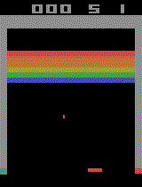
Extra material
Deque vs Rotating List
The deque class offers fast append, but fairly slow random access (for large replay memories):
from collections import deque
np.random.seed(42)
mem = deque(maxlen=1000000)
for i in range(1000000):
mem.append(i)
[mem[i] for i in np.random.randint(1000000, size=5)][121958, 671155, 131932, 365838, 259178]%timeit mem.append(1)47.4 ns ± 3.02 ns per loop (mean ± std. dev. of 7 runs, 10000000 loops each)%timeit [mem[i] for i in np.random.randint(1000000, size=5)]182 µs ± 6.9 µs per loop (mean ± std. dev. of 7 runs, 1000 loops each)Alternatively, you could use a rotating list like this ReplayMemory class. This would make random access faster for large replay memories:
class ReplayMemory:
def __init__(self, max_size):
self.buffer = np.empty(max_size, dtype=np.object)
self.max_size = max_size
self.index = 0
self.size = 0
def append(self, obj):
self.buffer[self.index] = obj
self.size = min(self.size + 1, self.max_size)
self.index = (self.index + 1) % self.max_size
def sample(self, batch_size):
indices = np.random.randint(self.size, size=batch_size)
return self.buffer[indices]mem = ReplayMemory(max_size=1000000)
for i in range(1000000):
mem.append(i)
mem.sample(5)array([757386, 904203, 190588, 595754, 865356], dtype=object)%timeit mem.append(1)519 ns ± 17.8 ns per loop (mean ± std. dev. of 7 runs, 1000000 loops each)%timeit mem.sample(5)9.24 µs ± 227 ns per loop (mean ± std. dev. of 7 runs, 100000 loops each)Creating a Custom TF-Agents Environment
To create a custom TF-Agent environment, you just need to write a class that inherits from the PyEnvironment class and implements a few methods. For example, the following minimal environment represents a simple 4x4 grid. The agent starts in one corner (0,0) and must move to the opposite corner (3,3). The episode is done if the agent reaches the goal (it gets a +10 reward) or if the agent goes out of bounds (-1 reward). The actions are up (0), down (1), left (2) and right (3).
class MyEnvironment(tf_agents.environments.py_environment.PyEnvironment):
def __init__(self, discount=1.0):
super().__init__()
self._action_spec = tf_agents.specs.BoundedArraySpec(
shape=(), dtype=np.int32, name="action", minimum=0, maximum=3)
self._observation_spec = tf_agents.specs.BoundedArraySpec(
shape=(4, 4), dtype=np.int32, name="observation", minimum=0, maximum=1)
self.discount = discount
def action_spec(self):
return self._action_spec
def observation_spec(self):
return self._observation_spec
def _reset(self):
self._state = np.zeros(2, dtype=np.int32)
obs = np.zeros((4, 4), dtype=np.int32)
obs[self._state[0], self._state[1]] = 1
return tf_agents.trajectories.time_step.restart(obs)
def _step(self, action):
self._state += [(-1, 0), (+1, 0), (0, -1), (0, +1)][action]
reward = 0
obs = np.zeros((4, 4), dtype=np.int32)
done = (self._state.min() < 0 or self._state.max() > 3)
if not done:
obs[self._state[0], self._state[1]] = 1
if done or np.all(self._state == np.array([3, 3])):
reward = -1 if done else +10
return tf_agents.trajectories.time_step.termination(obs, reward)
else:
return tf_agents.trajectories.time_step.transition(obs, reward,
self.discount)The action and observation specs will generally be instances of the ArraySpec or BoundedArraySpec classes from the tf_agents.specs package (check out the other specs in this package as well). Optionally, you can also define a render() method, a close() method to free resources, as well as a time_step_spec() method if you don’t want the reward and discount to be 32-bit float scalars. Note that the base class takes care of keeping track of the current time step, which is why we must implement _reset() and _step() rather than reset() and step().
my_env = MyEnvironment()
time_step = my_env.reset()
time_stepTimeStep(step_type=array(0, dtype=int32), reward=array(0., dtype=float32), discount=array(1., dtype=float32), observation=array([[1, 0, 0, 0],
[0, 0, 0, 0],
[0, 0, 0, 0],
[0, 0, 0, 0]], dtype=int32))time_step = my_env.step(1)
time_stepTimeStep(step_type=array(1, dtype=int32), reward=array(0., dtype=float32), discount=array(1., dtype=float32), observation=array([[0, 0, 0, 0],
[1, 0, 0, 0],
[0, 0, 0, 0],
[0, 0, 0, 0]], dtype=int32))Exercise Solutions
1. to 7.
See Appendix A.
8.
Exercise: Use policy gradients to solve OpenAI Gym’s LunarLander-v2 environment. You will need to install the Box2D dependencies (%pip install -U gym[box2d]).
Let’s start by creating a LunarLander-v2 environment:
env = gym.make("LunarLander-v2")The inputs are 8-dimensional:
env.observation_spaceBox(-inf, inf, (8,), float32)env.seed(42)
obs = env.reset()
obsarray([-0.00499964, 1.4194578 , -0.506422 , 0.37943238, 0.00580009,
0.11471219, 0. , 0. ], dtype=float32)From the source code, we can see that these each 8D observation (x, y, h, v, a, w, l, r) correspond to: * x,y: the coordinates of the spaceship. It starts at a random location near (0, 1.4) and must land near the target at (0, 0). * h,v: the horizontal and vertical speed of the spaceship. It starts with a small random speed. * a,w: the spaceship’s angle and angular velocity. * l,r: whether the left or right leg touches the ground (1.0) or not (0.0).
The action space is discrete, with 4 possible actions:
env.action_spaceDiscrete(4)Looking at the LunarLander-v2’s description, these actions are: * do nothing * fire left orientation engine * fire main engine * fire right orientation engine
Let’s create a simple policy network with 4 output neurons (one per possible action):
keras.backend.clear_session()
np.random.seed(42)
tf.random.set_seed(42)
n_inputs = env.observation_space.shape[0]
n_outputs = env.action_space.n
model = keras.models.Sequential([
keras.layers.Dense(32, activation="relu", input_shape=[n_inputs]),
keras.layers.Dense(32, activation="relu"),
keras.layers.Dense(n_outputs, activation="softmax"),
])Note that we’re using the softmax activation function in the output layer, instead of the sigmoid activation function like we did for the CartPole-v1 environment. This is because we only had two possible actions for the CartPole-v1 environment, so a binary classification model worked fine. However, since we now how more than two possible actions, we need a multiclass classification model.
Next, let’s reuse the play_one_step() and play_multiple_episodes() functions we defined for the CartPole-v1 Policy Gradient code above, but we’ll just tweak the play_one_step() function to account for the fact that the model is now a multiclass classification model rather than a binary classification model. We’ll also tweak the play_multiple_episodes() function to call our tweaked play_one_step() function rather than the original one, and we add a big penalty if the spaceship does not land (or crash) before a maximum number of steps.
def lander_play_one_step(env, obs, model, loss_fn):
with tf.GradientTape() as tape:
probas = model(obs[np.newaxis])
logits = tf.math.log(probas + keras.backend.epsilon())
action = tf.random.categorical(logits, num_samples=1)
loss = tf.reduce_mean(loss_fn(action, probas))
grads = tape.gradient(loss, model.trainable_variables)
obs, reward, done, info = env.step(action[0, 0].numpy())
return obs, reward, done, grads
def lander_play_multiple_episodes(env, n_episodes, n_max_steps, model, loss_fn):
all_rewards = []
all_grads = []
for episode in range(n_episodes):
current_rewards = []
current_grads = []
obs = env.reset()
for step in range(n_max_steps):
obs, reward, done, grads = lander_play_one_step(env, obs, model, loss_fn)
current_rewards.append(reward)
current_grads.append(grads)
if done:
break
all_rewards.append(current_rewards)
all_grads.append(current_grads)
return all_rewards, all_gradsWe’ll keep exactly the same discount_rewards() and discount_and_normalize_rewards() functions as earlier:
def discount_rewards(rewards, discount_rate):
discounted = np.array(rewards)
for step in range(len(rewards) - 2, -1, -1):
discounted[step] += discounted[step + 1] * discount_rate
return discounted
def discount_and_normalize_rewards(all_rewards, discount_rate):
all_discounted_rewards = [discount_rewards(rewards, discount_rate)
for rewards in all_rewards]
flat_rewards = np.concatenate(all_discounted_rewards)
reward_mean = flat_rewards.mean()
reward_std = flat_rewards.std()
return [(discounted_rewards - reward_mean) / reward_std
for discounted_rewards in all_discounted_rewards]Now let’s define some hyperparameters:
n_iterations = 200
n_episodes_per_update = 16
n_max_steps = 1000
discount_rate = 0.99Again, since the model is a multiclass classification model, we must use the categorical cross-entropy rather than the binary cross-entropy. Moreover, since the lander_play_one_step() function sets the targets as class indices rather than class probabilities, we must use the sparse_categorical_crossentropy() loss function:
optimizer = keras.optimizers.Nadam(learning_rate=0.005)
loss_fn = keras.losses.sparse_categorical_crossentropyWe’re ready to train the model. Let’s go!
env.seed(42)
mean_rewards = []
for iteration in range(n_iterations):
all_rewards, all_grads = lander_play_multiple_episodes(
env, n_episodes_per_update, n_max_steps, model, loss_fn)
mean_reward = sum(map(sum, all_rewards)) / n_episodes_per_update
print("\rIteration: {}/{}, mean reward: {:.1f} ".format(
iteration + 1, n_iterations, mean_reward), end="")
mean_rewards.append(mean_reward)
all_final_rewards = discount_and_normalize_rewards(all_rewards,
discount_rate)
all_mean_grads = []
for var_index in range(len(model.trainable_variables)):
mean_grads = tf.reduce_mean(
[final_reward * all_grads[episode_index][step][var_index]
for episode_index, final_rewards in enumerate(all_final_rewards)
for step, final_reward in enumerate(final_rewards)], axis=0)
all_mean_grads.append(mean_grads)
optimizer.apply_gradients(zip(all_mean_grads, model.trainable_variables))Iteration: 200/200, mean reward: 134.2 Let’s look at the learning curve:
import matplotlib.pyplot as plt
plt.plot(mean_rewards)
plt.xlabel("Episode")
plt.ylabel("Mean reward")
plt.grid()
plt.show()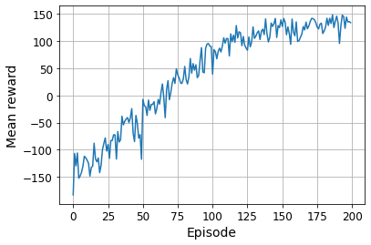
Now let’s look at the result!
def lander_render_policy_net(model, n_max_steps=500, seed=42):
frames = []
env = gym.make("LunarLander-v2")
env.seed(seed)
tf.random.set_seed(seed)
np.random.seed(seed)
obs = env.reset()
for step in range(n_max_steps):
frames.append(env.render(mode="rgb_array"))
probas = model(obs[np.newaxis])
logits = tf.math.log(probas + keras.backend.epsilon())
action = tf.random.categorical(logits, num_samples=1)
obs, reward, done, info = env.step(action[0, 0].numpy())
if done:
break
env.close()
return framesframes = lander_render_policy_net(model, seed=42)
plot_animation(frames)That’s pretty good. You can try training it for longer and/or tweaking the hyperparameters to see if you can get it to go over 200.
9.
Exercise: Use TF-Agents to train an agent that can achieve a superhuman level at SpaceInvaders-v4 using any of the available algorithms.
Please follow the steps in the Using TF-Agents to Beat Breakout section above, replacing "Breakout-v4" with "SpaceInvaders-v4". There will be a few things to tweak, however. For example, the Space Invaders game does not require the user to press FIRE to begin the game. Instead, the player’s laser cannon blinks for a few seconds then the game starts automatically. For better performance, you may want to skip this blinking phase (which lasts about 40 steps) at the beginning of each episode and after each life lost. Indeed, it’s impossible to do anything at all during this phase, and nothing moves. One way to do this is to use the following custom environment wrapper, instead of the AtariPreprocessingWithAutoFire wrapper:
class AtariPreprocessingWithSkipStart(AtariPreprocessing):
def skip_frames(self, num_skip):
for _ in range(num_skip):
super().step(0) # NOOP for num_skip steps
def reset(self, **kwargs):
obs = super().reset(**kwargs)
self.skip_frames(40)
return obs
def step(self, action):
lives_before_action = self.ale.lives()
obs, rewards, done, info = super().step(action)
if self.ale.lives() < lives_before_action and not done:
self.skip_frames(40)
return obs, rewards, done, infoMoreover, you should always ensure that the preprocessed images contain enough information to play the game. For example, the blasts from the laser cannon and from the aliens should still be visible despite the limited resolution. In this particular case, the preprocessing we did for Breakout still works fine for Space Invaders, but that’s something you should always check if you want try other games. To do this, you can let the agent play randomly for a while, and record the preprocessed frames, then play the animation and ensure the game still looks playable.
You will also need to let the agent train for quite a long time to get good performance. Sadly, the DQN algorithm is not able to reach superhuman level on Space Invaders, likely because humans are able to learn efficient long term strategies in this game, whereas DQN can only master fairly short strategies. But there has been a lot of progress over the past few years, and now many other RL algorithms are able to surpass human experts at this game. Check out the State-of-the-Art for Space Invaders on paperswithcode.com.
10.
Exercise: If you have about $100 to spare, you can purchase a Raspberry Pi 3 plus some cheap robotics components, install TensorFlow on the Pi, and go wild! For an example, check out this fun post by Lukas Biewald, or take a look at GoPiGo or BrickPi. Start with simple goals, like making the robot turn around to find the brightest angle (if it has a light sensor) or the closest object (if it has a sonar sensor), and move in that direction. Then you can start using Deep Learning: for example, if the robot has a camera, you can try to implement an object detection algorithm so it detects people and moves toward them. You can also try to use RL to make the agent learn on its own how to use the motors to achieve that goal. Have fun!
It’s your turn now: go crazy, be creative, but most of all, be patient and move forward step by step, you can do it!